Alapok
Minden alapozás a terepszint alá kerül. Amíg csak egy-két méteres alapárok kell, a talaj rövid ideig függőleges falban is megáll. Egy pinceszinttől lefelé viszont a gödör falát vagy rézsűvel kell kiváltani, vagy valamilyen szerkezettel meg kell támasztani – és ha a gödör a talajvíz alá ér, a vizet is ki kell zárni.
Gödör, árok, munkatér
Ha egy alaptest helyéről emeljük ki a talajt, alapgödörről (pontalap) vagy alapárokról (sávalap) beszélünk. Ha egy egész építmény számára, akkor munkagödörről és munkaárokról. A munkaárok tulajdonképpen keskeny munkagödör: jellemzően legfeljebb 1–3 m széles, vonalas létesítményekhez – például közművek fektetéséhez – készül, és a munka végén visszatemetik.
Minél mélyebb a kiemelés, annál valószínűbb, hogy megjelenik a talajvíz. Ha a gödör alsó síkja az építési talajvízszint alá kerül, gondoskodni kell a víztelenítésről is. Ezért a munkatér-határolást és a víztelenítést az alapozással párhuzamosan kell megtervezni – egyes rendszereknél (például a résfalnál) a munkatérhatárolás egyben maga az alapozás is.
A munkagödör nagyságát meghatározza
- az építmény méretei (+ munkatér a falak, szigetelés mellett),
- a közlekedési, szállítási igények (rámpa, daru, kotró),
- a víztelenítési igények (szivárgó, zsomp, kutak helye).
A határolás módja függ
Koppints egy szempontra!
Mi tartja meg a falat?
A határolás lehet ideiglenes – a felszín alatti építmény elkészülte után megszűnik a szerepe – vagy végleges, amikor az építmény része lesz (mélygarázs, aluljáró, alagút). Az egyensúlyt a jegyzet szerint négyféleképpen lehet biztosítani, és sok esetben ezek kombinációja ad megoldást, például a befogott-horgonyzott szerkezet.
A lehetséges szerkezetek – technológia-térkép
A jegyzet és az előadás felsorolása alapján a határolás kialakítható rézsűsen, dúcolással, falszerkezetekkel és különleges megoldásokkal. Minden csempe a saját fejezetére visz; a jobb felső szám az animációs videó sorszáma.
A réselt fal (résfal) és a nagy-szekrény (szekrényalapozás) is munkatérhatárolás – ezeket a mélyalapozásoknál tárgyaltuk. A résfal gyakran egyszerre határolja a munkateret, zárja ki a vizet és viseli a végleges terheket.
Rézsűs kialakítás
A legegyszerűbb megoldás – komolyabb mélyépítési technológia nem kell hozzá –, de nem biztos, hogy a legolcsóbb. Csak ott jöhet szóba, ahol közvetlenül a gödör mellett nincs építmény, és elég hely van. Sok helyet foglal, nagy földtömeget kell megmozgatni és deponálni (ehhez is hely kell), majd az építmény elkészülte után rétegesen tömörítve visszaépíteni. Egyes talajok (pl. kövér agyagok) kiemelés után nem alkalmasak visszaépítésre, vagy csak stabilizálással; gond lehet a deponált föld elázása–kiszáradása is.
- A rézsű legnagyobb hajlását állékonysági vizsgálattal kell meghatározni; kohéziómentes szemcsés talajban a hajlásszög nem lehet nagyobb a belső súrlódási szögnél (β ≤ φ).
- 3–5 m-nél magasabb rézsűbe padkát célszerű beépíteni.
- Veszélyes a befelé lejtő agyagréteg (főleg rétegvízzel), és a talajvíz nem várt emelkedése is okozhat rézsűmozgást.
- A közeli szádfal- vagy cölöpverés és a forgalom dinamikus hatása csökkenti az állékonyságot.
- Nagyon fontos a csapadékvíz elvezetése a gödörben és a felszínen is.
- A rézsű felett, a szakadólapon belül ne deponáljunk; a méretezésben szabvány szerint min. 10 kPa felszíni teher vehető figyelembe.
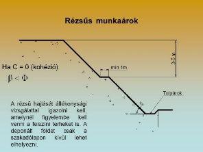
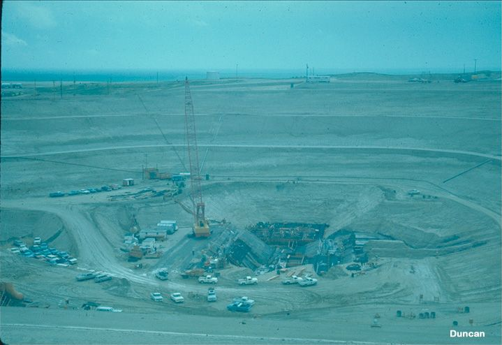
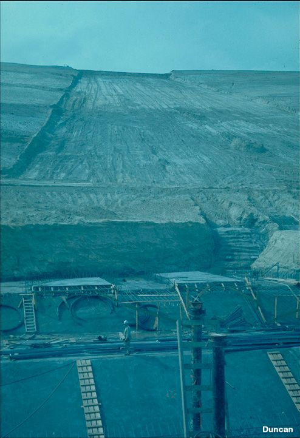
A rézsűs kiemelés földtömege a mélység négyzetével nő: 6 m mély gödörnél 1:1 hajlás mellett oldalanként folyóméterenként 18 m³ többletföldet kell kitermelni, deponálni, majd visszatömöríteni – 12 m-nél már 72 m³-t. Városi telken ezért szinte mindig megtámasztott falat építenek.
Források
- Munkatér határolások – egyetemi jegyzet, 1. fejezet és 1.1 (BME, Alapozás).
- Dr. Móczár Balázs: Alapozás – munkatérhatárolások, előadásanyag, 3–8. dia (BME).
- Fővárosi Vízművek: T-59 tájékoztató a munkaárok műszaki megfelelőségéről – vizmuvek.hu
- BME ÉKT: Földmunkák (oktatási segédlet) – ekt.bme.hu
- Galgóczi Gy.: Munkagödrök dúcolása (házi jegyzet) – galgoczi.net
Munkaárok dúcolása
A dúcolás „szembetámaszt” jelent: a gödröt, árkot határoló két földfal nyomását nyomott elemekkel, dúcokkal vesszük fel – a két oldal földnyomása így egymásnak feszül. Mivel a dúc kihajlási hossza a gödör szélességével nő, a módszer elsősorban keskeny, 1–3 m széles közműárkokban használatos.
A dúcolat elemei
A hagyományos dúcolat a helyszínen, három elemből készül: a földfalat pallókkal terítik be, ezeket hevederek fogják össze, a hevedereket pedig dúcokkal támasztják szembe.
Régen mindhárom elem fából készült: 2 colos (48 mm) pallók, 12–24 cm oldalhosszú gerendahevederek és 12–16 cm átmérőjű gömbfa dúcok. Ma jellemzően acélt használnak: a földfal beterítésére Pátria- és Union-szádlemezt (csatornapallót), esetleg CS hullámlemezt, hevedernek melegen hengerelt I- és U-szelvényt, dúcnak I-tartót, csövet vagy – leggyakrabban – állítható hosszúságú csavaros acéldúcot.
A dúcolat készítésének módját az határozza meg, milyen talajban készül, van-e kohéziója, és egyáltalán milyen mélységig lehet megtámasztás nélkül, rövid ideig kiemelni.
A Pátria- és Union-szádlemez vékony falú (3–6 mm), 25–30 cm hasznos szélességű profilos lemez. Kapcsolata nem vízzáró, ezért csak dúcolásra való, víztelenítésre nem – szemben a hornyosan összefűzött, vízzáró acél szádfallal (lásd 4. fejezet).
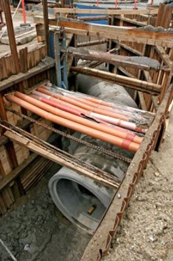
Meddig áll meg a függőleges földfal?
Talajvíz felett, kötött talajban a függőleges földfal megtámasztás nélkül ideiglenesen egy bizonyos m₀ mélységig állékony. Ez a kohéziótól, a belső súrlódási szögtől, a térfogatsúlytól és a peremen ható terheléstől függ:
m₀ mélységig elméletileg megtámasztás nélkül is kiemelhető lenne az árok. A kiemelt földfal azonban ki van téve az időjárásnak (kiszáradás – zsugorodás, átázás), az állapota leromolhat, ezért munkavédelmi okból mindenképpen dúcolni kell:
Az előadás szerint dúcolni kell mindig, ha dinamikus hatás érheti az árkot (közlekedés, cölöpözés), illetve épületek mellett – és a dúcolás biztonságát számítással kell ellenőrizni.
Az amerikai NIOSH adatai szerint a halálos árokbeomlások mintegy 80%-a 3 m-nél (10 lábnál) sekélyebb árokban történt. Egy köbméter föld 1,5–2 tonna: egy 3 m mély függőleges fal mögül folyóméterenként nagyjából 4 tonnányi ék csúszhat le.
2025 januárjában Tarcalon egy csatornajavításhoz kiásott, a beszámolók szerint kb. 4–5 m mély, közel függőleges falú munkagödör fala omlott rá egy munkásra, aki életét vesztette. A sajtó szerint a gödör fala nem volt megfelelően biztosítva; a vizsgálat a munkavédelmi szabályok megsértését vizsgálta.
Egy hazai közműszolgáltató munkavédelmi segédlete szerint például: 5 m-nél mélyebb munkagödörnél – vagy ha a perem mellett statikus, dinamikus teher hat – a dúcolás biztonságát számítással kell igazolni; az árok szélén 0,5 m-es padkát szabadon kell hagyni; az árokba létra kell; a dúcokon átjárni, azokat munkaállásként vagy anyagtárolásra használni tilos; a dúcolat mögötti üregeket ki kell tölteni.
Négy pallózási mód
Attól függően, hogy milyen az m₀ és a tervezett mélység (H) „viszonya”, a pallókat, hevedereket és dúcokat különböző módon lehet – és kell – elhelyezni:
Állított pallózás
Teljes mélységig kiemelnek, utána függőleges pallók, rájuk vízszintes hevederek, dúcok – min. két sorban.
Utánhajtott pallózás
m₀ mélységű lépcsőkben lefelé, minden lépcsőben utánhajtva a pallókat; a hevedereket ideiglenesen alátámasztják.
Vízszintes pallózás
Lépcsős mélyítés vízszintes pallókkal; a függőleges hevedereket lépcsőnként hosszabbakra cserélik.
Előrevert pallózás
Durvaszemcsés talaj: az acélpallókat a kiemelés előtt leverik, levibrálják, aztán lépcsőkben ásnak.
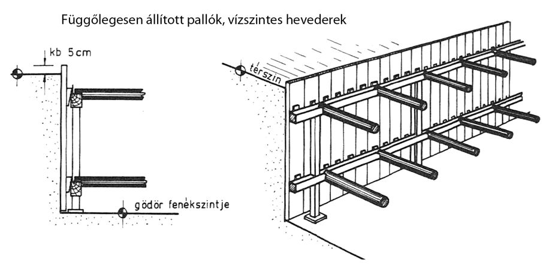
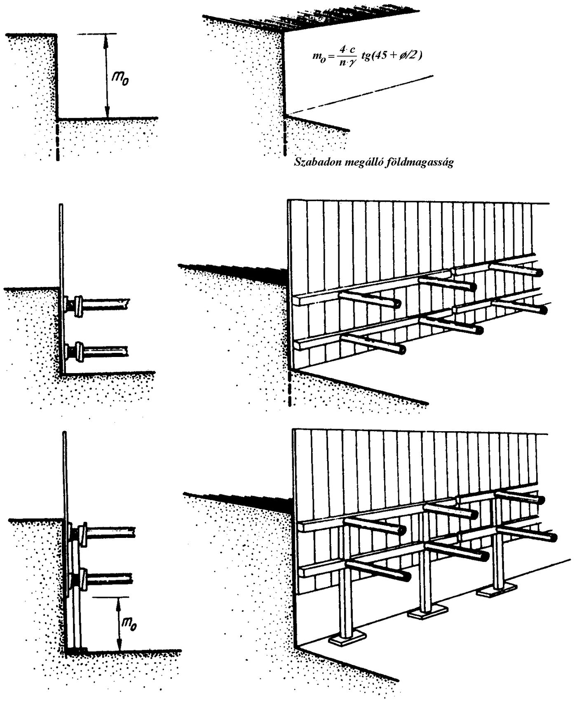
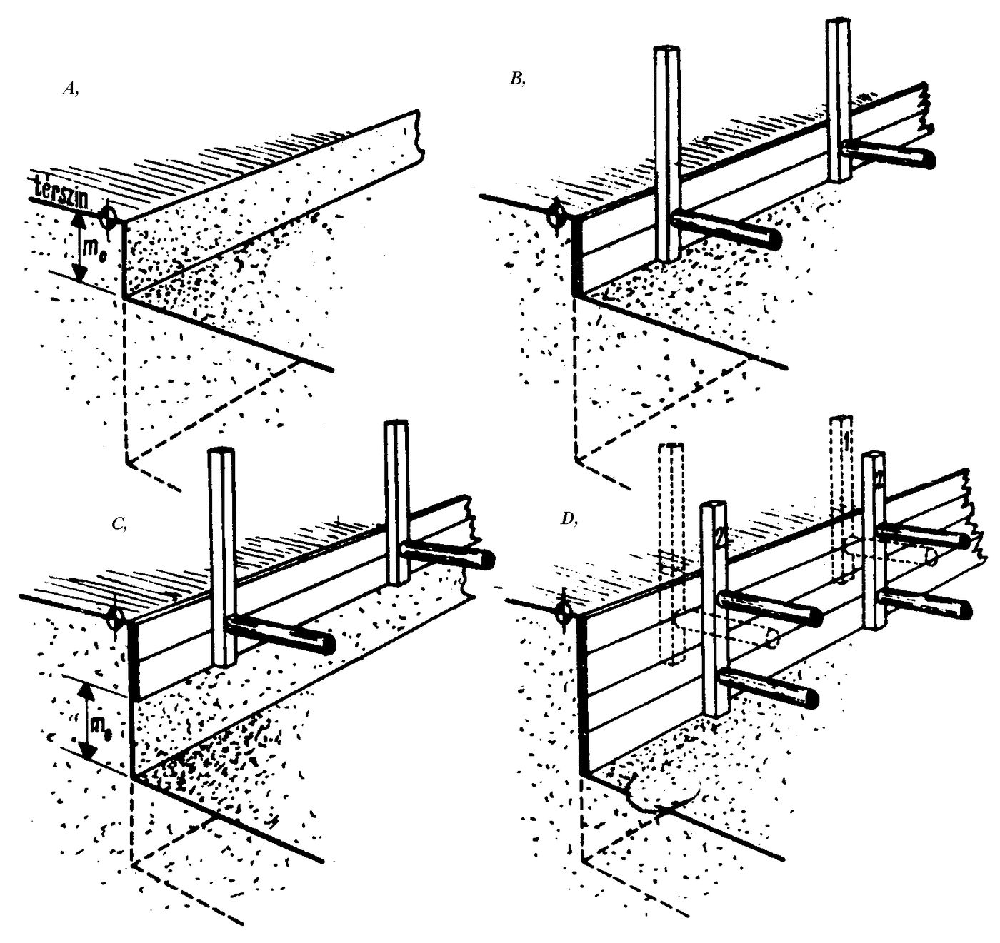
Állékonyabb, kötött talajban megengedhető a hézagos pallózás: kb. minden második palló elhagyható (az előadás szerint a köztávolság legfeljebb 0,5·m₀). A 6 m-nél mélyebb munkagödröket szakaszokra bontják: így alakul ki a lépcsős dúcolás, ahol a felső rész kb. 2×20 cm-rel szélesebb az alsónál.
A dúcolatot mindig alulról felfelé bontják, a rétegenként (15–20 cm) tömörített visszatöltéssel lépést tartva: egy dúc csak akkor jöhet ki, ha alatta már föld támaszt. Az előrevert pallók vége pedig mindig legalább 30 cm-rel a talajban marad.
Dúcnyomás és méretezés
A dúcolatok tervezése egyszerűsített eljárásokkal történik: a pontos számítás nagyon bonyolult lenne, mert a kialakuló földnyomás erősen függ a beépítéstől (a fellazulás, illetve a befeszítés mértékétől) – valahol az aktív és a passzív állapot között van. A pallókra ezért egy egyenletesen ható helyettesítő vízszintes terhelést veszünk fel, amely tulajdonképpen a befeszített dúcok reakcióereje: ez a dúcnyomás.
A méretezés egyszerű statikai vázakkal – általában két- vagy háromtámaszú tartókkal – történik: a pallókat és a hevedereket hajlításra, a dúcokat nyomásra (kihajlással) kell ellenőrizni.
Táblás dúcolat
Az utóbbi két évtizedben előtérbe kerültek a sokszor felhasználható, gyorsan beemelhető, bármilyen talajviszonyok között alkalmazható előregyártott táblás dúcolatok. Jellemzően egyben, merevített acéllemezekkel készülnek; sok esetben csak a „földfal beterítése” van egy táblában, és rejtett hevederek vannak, vagy külön merevítő hevedereket alkalmaznak, és csavaros dúcokkal támasztják szembe.
A dobozt (két táblát, közöttük állítható dúcokkal) a kotró emeli be és nyomja le – a dolgozónak nem kell védtelen árokba lépnie. Két beépítési mód van: beállítás a már kiásott árokba (csak ideiglenesen állékony talajban), illetve ásással együtt süllyesztés (laza talajban, forgalom mellett ez a kötelező).
Előnyök
- A felszínről, géppel építhető
- Gyors, sokszor újra felhasználható
- Merev pajzs védi a csőfektetőket
- Bármilyen talajban alkalmazható
Korlátok
- Doboz: kb. 4–6 m mélységig
- A dúcok akadályozzák a hosszú csövek beemelését
- Keresztező közmű megakaszthatja
- Nehéz (1–3 t/doboz), megfelelő kotró kell
A dúcolódoboz szigorúan véve passzív pajzs: nem akadályozza meg a talaj mozgását, csak megvéd tőle – a talaj addig mozdul, amíg rá nem fekszik a táblára. Ezért kell a doboz és a földfal közti rést azonnal kitölteni. Egy 4,5 m hosszú, 100 mm-es táblájú alapdoboz közel 3 tonna – mégis egy kotró nyomja le a kanala hátával, sarokról sarokra.
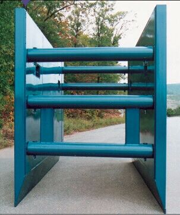
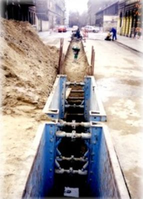
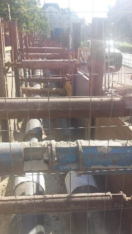
Források
- Munkatér határolások – jegyzet, 1.2 fejezet (BME Építőmérnöki Kar, Alapozás).
- Dr. Móczár Balázs: Alapozás – munkatérhatárolások, előadásanyag, 9–18. dia.
- PTE MIK – Dúcolások (építéstechnológia jegyzet)
- PTE MIK – Földmunkák (építéstechnológia jegyzet)
- Galgóczi: Munkagödrök dúcolása – házi jegyzet
- BME ÉKT – Földmunkák
- Fővárosi Vízművek – T-59 tájékoztató a munkaárok műszaki megfelelőségéről
- E.ON – Munkagödör kialakítás, közúti munkavégzés, menekülési útvonalak
- DIN 4124 – Baugruben und Gräben (kivonat, umwelt-online)
- BG BAU – Baustein c 470: Grabenverbau
- BGR 176 – Grabenverbaugeräte (beállítás és süllyesztés szabályai)
- Tata Steel – Trench sheeting (csatornapallók)
- thyssenkrupp / KRINGS – dúcolórendszerek műszaki kézikönyve
- Euroverbau – csúszósínes rendszerek
- Conquip – Trench box user guide
- SafetyNow – Trenching and excavation stats and facts (NIOSH: 80% < 10 ft)
- US DOL / OSHA – árokbeomlásos balesetek (2016)
- Telex – Halálos baleset Tarcalon, beomlott munkagödör (2025. 01. 24.)
- Wikipedia – Trench shoring
Széles munkagödör dúcolása
Minél szélesebb a gödör, annál hosszabb a dúc – és annál könnyebben kihajlik. Kb. 3 m-nél szélesebb gödröknél már sokkal „masszívabb” merevítés kell: több irányban merevített dúcok, a gödör aljára támaszkodó ferde dúcok, hátrahorgonyzás vagy nagy átmérőjű acél csőtámaszok.
A hosszú dúc ellensége: a kihajlás
Egy nyomott, karcsú rúd a teherbírása kimerülése előtt oldalra kitérhet – ez a kihajlás (kibicsaklás). A rugalmas kritikus erő a dúchossz négyzetével csökken: kétszer olyan széles gödörben a dúc már csak negyedannyit bír.
Ha a hagyományos dúcokat szeretnénk használni, akkor már több irányban is merevíteni kell őket – ez jelentősen megnehezíti a munkavégzést a munkagödörben, hiszen a merevítés elzárja a gödör közepét.
Hazai jegyzetek szerint széles gödörben a vízszintes dúcokat kb. 6 m-enként oszloppal kell alátámasztani a kihajlás ellen. A német DIN 4124 szerint a dúcsorok merevítésének a dúcerők összegének legalább 1/100-át kell felvennie – ezért kerülnek a dúcok közé átlós és sarokmerevítések.
A régi ácsok egyik érve a fenyő dúcok mellett: a túlterhelt lucfenyő dúc hangosan recseg, mielőtt eltörne – figyelmeztet. A DIN szerinti szabványos fa dúcolatban a kerek dúcok legnagyobb kihajlási hossza mindössze kb. 2 m.
Ferde dúcok a gödör aljára
Nem kell feltétlenül szembetámasztani a földfalakat: a falat ferde dúcokkal a munkagödör aljára is meg lehet támasztani. A ferde dúc erejének azonban függőleges összetevője is van – a dúc kifordulhat, ezért a függőleges egyensúlyát is ellenőrizni kell, és a dúcnak kellően laposnak kell lennie.
Előnyösen felhasználható a megtámasztásra az építendő műtárgy alaplemeze is – ilyenkor azonban az alaplemezt szakaszosan kell megépíteni: először a belső része készül el úgy, hogy a szélén rézsűsen még nagyobb földtámaszt (földpadkát) hagynak meg, és ahhoz támasztják a ferde dúcokat – a teljes földkiemelés előtt.
Minden esetben gondot jelent az alapozás és a pincefalak építése, szigetelése, mert a dúcolati rendszert csak akkor lehet elbontani, amikor a pincei szerkezetek (falak és födémek) már elkészültek, és tárcsaként fel tudják venni a földnyomást.
A ferde dúc kihajlását és a dúcfej kapcsolatát; a fal (vagy a tartók) felemelését a függőleges erőből; a dúc talppontjának, ellentámaszának elcsúszását; a földpadka állékonyságát – magas talajvíznél a fiatal alaplemez felúszását is.
Előnyök
- A gödör közepe szabad marad
- Olcsóbb lehet a vízszintes acéldúcoknál
- Nem nyúlik a szomszéd telek alá
Korlátok
- A padka és a dúcok elfoglalják a peremsávot
- Szakaszos lemezépítés, munkahézagok
- Inkább mérsékelt mélységig (egy dúcsor)
Ha van hely – vagy ha nagyon széles a gödör
Passzív hátrahorgonyzás
Ha a munkagödör mellett van hely, a megtámasztó fal a szakadólapon kívül levert I- vagy U-tartókhoz köthető vissza betonacélokkal vagy horgonyrudakkal – ezek a felszín alatt 0,8–1,0 m-re, egy keskeny árokban futnak.
Tovább a 7. fejezethez →Acél csőtámaszok
Szélesebb munkagödrökben dúcként ma leggyakrabban nagyobb átmérőjű acél csőtámaszokat használnak – így a legtöbb esetben nincs szükség közbenső merevítésre.
Tovább a 7. fejezethez →Talajhorgonyok
„Tiszta” munkagödör érhető el hátrahorgonyzással: a megtámasztás a gödör mögé kerül, a munkatér teljesen szabad marad – cserébe a horgonyok a szomszéd telek alá nyúlhatnak.
Tovább a 7. fejezethez →Források
- Munkatér határolások – jegyzet, 1.2.2 fejezet (BME Építőmérnöki Kar, Alapozás).
- Dr. Móczár Balázs: Alapozás – munkatérhatárolások, előadásanyag, 20. dia.
- Galgóczi: Munkagödrök dúcolása – házi jegyzet (3 m feletti szélesség, kihajlás)
- PTE MIK – Dúcolások (ferde megtámasztás, alaplemez felhasználása)
- BME ÉKT – Földmunkák (oszlopos alátámasztás kb. 6 m-enként)
- DIN 4124 – kivonat (merevítés: a dúcerők 1/100-a; kihajlási hosszak)
- TRL Report 380 – ferde dúcok és földpadkák esettanulmányai (dőlésszög, szakaszos padkabontás)
- The Construction Index – ferde dúcok egy Canary Wharf-i pinceépítésnél
- The Construction Index – ferde dúcok ellentámasz-tömbökhöz
- UC Davis – Deep excavation esettanulmány (padkás, „sziget” módszer)
- Berkel & Company – merevítési megoldások
Munkatérhatároló falak
Ha a gödör mélyebb és szélesebb, mint amit dúcokkal kényelmesen szembe lehet támasztani – vagy közvetlenül mellette utca, szomszéd épület áll –, a földfalat már a kiemelés előtt a talajba juttatott falszerkezet tartja meg. Ezek a falak a munkatér feneke alá nyúlnak, ott be vannak fogva, és a kiemeléssel lépést tartva szükség szerint dúcokkal, horgonyokkal vagy födémekkel támasztják meg őket.
A falakat két nagy családba sorolhatjuk. Az egyikben hézagosan álló, függőleges acélgerendák viszik a terhet, és a köztük lévő mezőt valamilyen kitöltés hidalja át: ez a berlini dúcolat, a jet-grouting fal, az erősített önszilárduló zagyfal és az erősített mélykevert fal. A másikban maga a folytonos fal a teherhordó: szádfal, cölöpfal, résfal.
Hogy melyiket választjuk, azt ugyanazok a szempontok döntik el, mint minden munkatérhatárolásnál: a rendelkezésre álló terület, a talaj, a talajvíz, a nyitvatartás ideje, a környezet beépítettsége (zaj, rezgés, mozgások), a létesítmény mérete és a rendelkezésre álló eszközök.
A berlini dúcolat, a jet-grouting fal, az erősített zagyfal és az erősített mélykevert fal statikailag ugyanúgy működik: acél I/H-tartók viszik a terhet a támaszokra és a befogásba. A különbség csak a mezők kitöltése – fapalló, jet-oszlop, megszilárdult zagy vagy helyben kevert talajcement. A kitöltés dönti el, hogy a fal vízzáró-e.
Siemens (berlini) dúcolat
Talajvízmentes, száraz, nem túl mély munkaárkok és munkagödrök egyik leggazdaságosabb ideiglenes függőleges partfal-megtámasztása. Az előadás szerint elsősorban a 6 m-nél mélyebb és 3–4 m-nél szélesebb munkagödröknél jön szóba – ahol a szembe dúcolás már nehézkes.
- Acéltartók. Hengerelt acél „I” (H) szelvényeket helyeznek el egymástól 1–3 m-re, általában 2 m-re – talajtípustól függően veréssel, vagy talajbetonnal kitöltött furatba helyezve. Sűrűbb kiosztást nagyobb terhelés indokolhat.
- Furat és befogás. Zajvédelmi okból ma inkább furatba helyezik a tartókat – így a veréssel nehezen átjárható rétegek sem okoznak gondot. A furat lehet szabadon álló vagy folyadékkal megtámasztott; a tartó behelyezése után mindig gondoskodni kell a furat kitöltéséről, különösen a kiemelési szint alatt, mert ott dolgozik a befogás.
- Pallózás a kiemeléssel lépést tartva. A nagyobb szelvényű tartók közé vízszintes pallókat csúsztatnak, és az övlemezekhez kiékelik; ritkábban a pallók függőlegesek. Heveder nem mindig kell: vastagabb pallókat (gerendákat) közvetlenül az övekhez ékelnek.
- Statikai működés. A tartók függőleges konzolként, vagy dúcokkal, talajhorgonyokkal gyámolított többtámaszú tartóként dolgoznak.
Előnyök
- sokszor felhasználható – a tartók kihúzhatók
- „tiszta” munkateret ad
- könnyen igazodik a gödör alakjához, a közműátvezetésekhez
- furatba helyezve csendes, rezgésszegény
Hátrányok
- nem vízzáró – csak talajvíz felett vagy víztelenítéssel
- nagy élőmunka-igény, ezért egyre inkább kiszorul a teljesen gépesített falakkal szemben
- hajlékony fal: mögötte süllyedés lehet – érzékeny szomszéd mellett csak feltételesen
- a talajban hagyott fapalló elkorhad
A „Berliner Verbau” a berlini metró építéséről kapta a nevét, a XX. század elején terjedt el: levert I-tartók, közöttük kiékelt fapallók. A berlini föld alatti és magasvasutat 1896-tól a Siemens & Halske építette (1902-ben nyílt meg) – a hazai „Siemens-dúcolat” elnevezés valószínűleg erre utal. A talajban hagyott fapallók elkorhadnak, és a fal mögötti talaj akár 20–25 év múlva is megsüllyedhet.
Egy berlini dúcolat 2004-ben a visszatöltés közben omlott be halálos balesetet okozva: a pallók elvesztették a kapcsolatot a talajjal, a kavics kipergett, és hiányoztak a pallók felfüggesztései. A pallókat a visszatöltéssel lépést tartva, alulról felfelé szabad kiszedni.
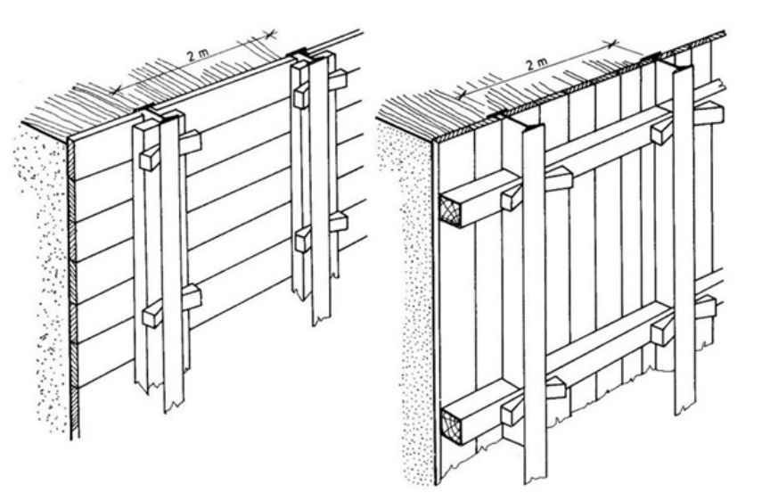
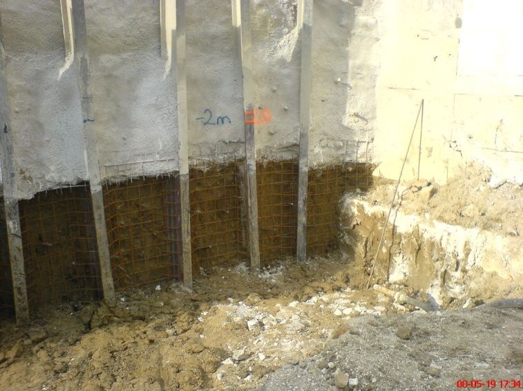
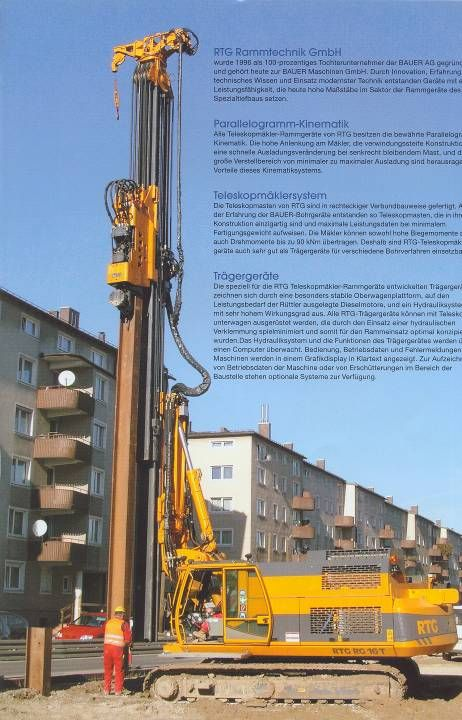
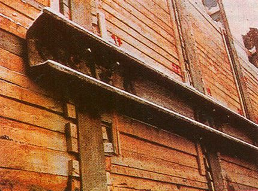
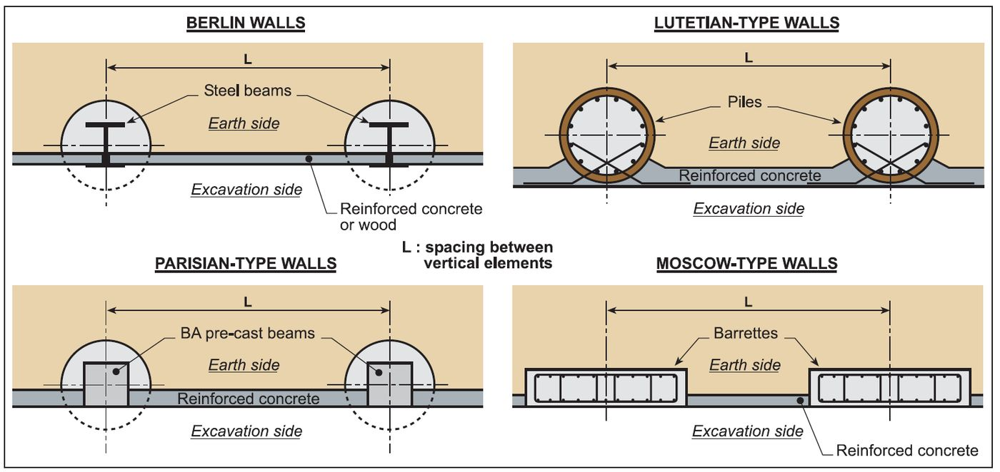
Jet-grouting fal
A berlini dúcolattal megegyező működésű szerkezet, amelynél az acéltagokat jet-habarccsal kezelt oszlopokba helyezik. Hazánkban jellemzően szimpla vagy dupla (cementzagy, illetve cementzagy + levegő) jet-technológiával, kis méretű I/H vagy csőszelvény erősítéssel, hézagos, érintő vagy összemetsző kivitelben, gyakran vasbeton cölöpökkel kombinálva készül.
- A jet-oszlopok 60–120 cm átmérővel készülnek – talajkörnyezettől függően (agyagban kisebb, kavicsban nagyobb).
- Mivel a jetelt talaj a szilárdulásáig igen sűrű folyadék, a behelyezhető acéltag mérete – az oszlop méretétől függetlenül – korlátos: csak a fúrószárral átjárt függély és annak közvetlen, 15–20 cm-es környezete fogadja be.
- Az átmérőnél 10–20 cm-rel kisebb osztás biztosítja a vízzárást: a fal kvázi vízzáró kivitelben is készíthető – nagy előny a berlini dúcolattal szemben.
- Az acéltagokat szilárd „talajbeton” veszi körül: nem kell utólagos furatkitöltés, és összemetsző oszlopoknál pallózás sem.
Acél erősítés nélkül súlytámfalszerű kialakítással is készül – ezt nem soroljuk a befogott támszerkezetek közé.
A fúvókán kilépő cementzagy-sugár akár 200 m/s sebességű – a 400 bar nyomás nagyjából 4 km mély óceán víznyomásának felel meg. Egy kb. 10 cm-es furatból így lesz közel 1 m átmérőjű talajcement oszlop. A módszer az 1960–70-es években Japánban született.
Az átmérő és a szilárdság a talajtól függ, ezért próbaoszlopokkal kell igazolni. Ha a visszafolyó iszap útja elzáródik, a túlnyomás megemelheti a talajt és a szomszéd épületet. Hol alkalmazzák? Talajvíz feletti vagy kis mértékben talajvíz alatti kiemeléseknél, ahol cölöp- vagy résfal nem fér el: 1–2 szintes mélygarázsok, utólagos hozzáépítések.
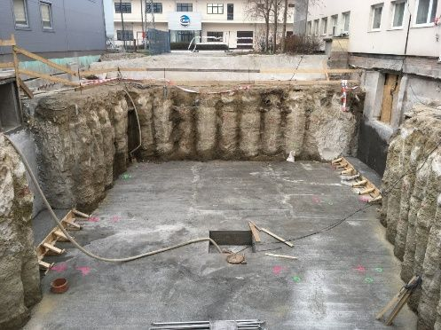
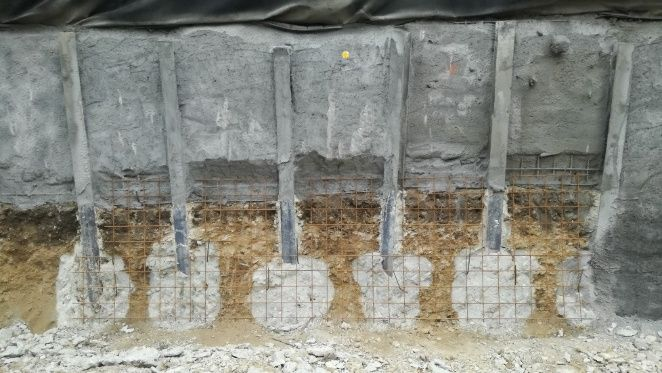
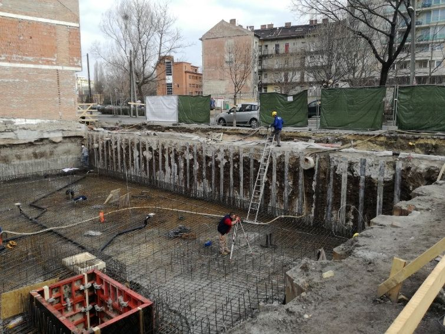
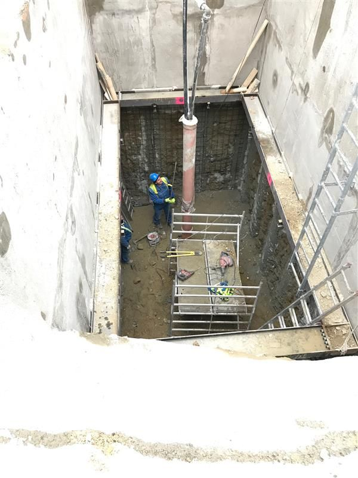
Erősített önszilárduló zagyfal
Az erősített önszilárduló zagyfal (erősített bentonit-cement fal) a berlini dúcolat tartószerkezeti és a résfal vízzárási tulajdonságait egyesíti. A falpaneleket a réseléssel megegyező markolásos technológiával, zagymegtámasztással emelik ki. A kívánt mélység elérése és az acél erősítés elhelyezése után azonban nem kerül beton a zagy helyére: a cementtartalmának köszönhetően megszilárduló zagy adja a fal textúráját és vízzárását („egyfázisú” eljárás).
A teherbírást a méretezett, jellemzően 1–2 m-es osztásközzel elhelyezett acélszelvények adják. A 28 napos korban – a keveréktől függően – jellegzetesen 0,5–1,4 MPa minimális nyomószilárdságú zagy a föld- és víznyomást boltozati hatás révén adja át az erősítő elemeknek.
Jellemzően legfeljebb 7–10 m mély, ideiglenes, kvázi vízzáró munkatérhatárolás optimális technológiája – ha a megtámasztott oldalon nincs jelentős felszíni terhelés vagy süllyedésre érzékeny szerkezet, és a talaj résállékonyság szempontjából kedvező. Az erősítő elemek szükség esetén passzív vagy kis feszítőerejű horgonyokkal, esetleg mellgerenda mentén elhelyezett acél dúcolattal támaszthatók meg. A fal vastagsága legalább 40 cm.
Egy jellemző keverék köbméterenként pl. 920 l víz, 40 kg bentonit és 200 kg (gyakran lassan kötő kohósalak-) cement. A kiemelés a fal elkészülte után kb. 2–4 héttel kezdődhet; a szabaddá váló felületet fagy és kiszáradás ellen védeni kell (pl. fóliával). Egy szádfalhoz képest akár feleannyi acél is elég lehet.
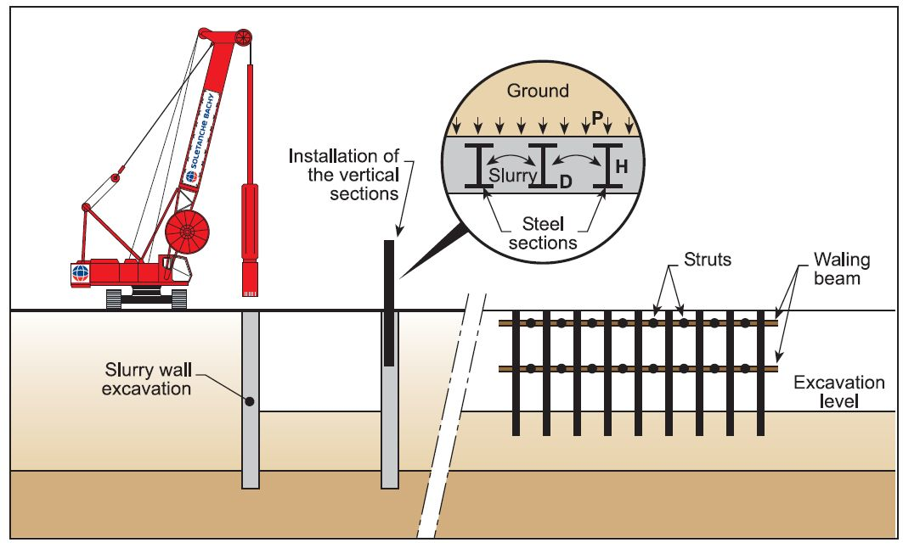
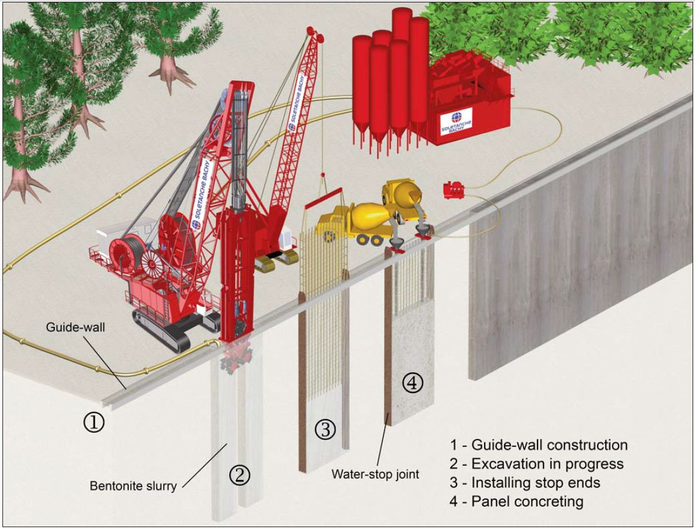
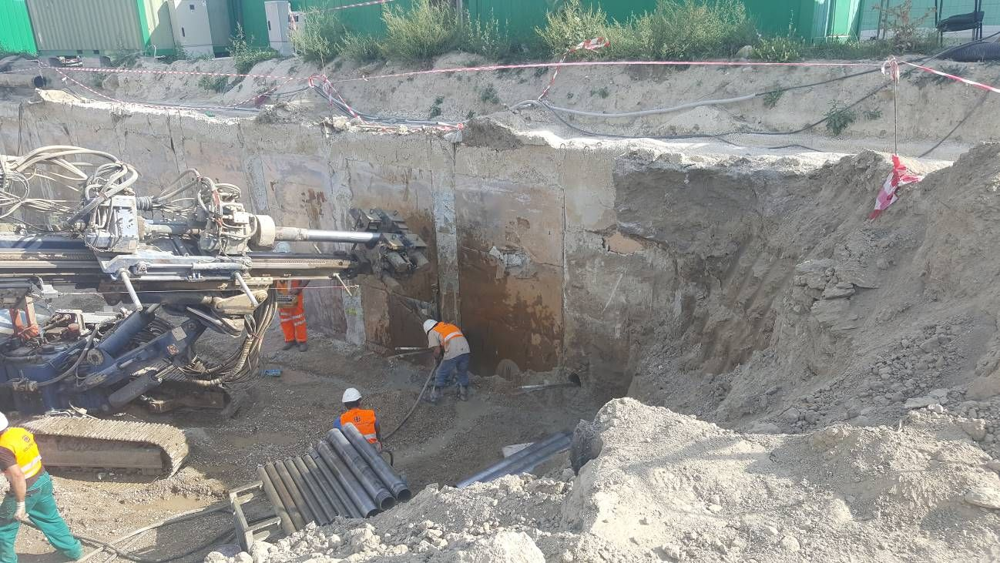
Erősített mélykeveréssel előállított fal
A nemzetközi piacon befogott támszerkezetként egyre gyakrabban alkalmazott megoldás. A talajt helyben, nedves mélykeverési eljárással keverik össze kötőanyaggal – falszerű (trenchmix, illetve marókerekes CSM) vagy oszlopszerű (colmix, többcsigás) keveréssel –, majd a friss keverékbe acél I/H-szelvényt juttatnak. Ideiglenes szerkezetként munkatérhatároló és vízszivárgást gátló falként épül.
A CSM-marófej két pár, ellentétesen forgó marókereke lefelé menet aprítja a talajt (közben zagyot adagolnak), a talpon visszafordul, és felfelé cementzaggyal homogénre keveri. Előbb a primer, aztán a közéjük belemaró szekunder panelek készülnek.
A mélykeverésnél alig keletkezik kitermelt föld – ez szennyezett talajban különösen nagy előny. Rezgésmentes, csendes és gyors, a gépek folyamatosan naplózzák a mélységet, a zagymennyiséget és a ferdeséget. A CSM-eljárást a Bauer 2004-ben fejlesztette ki a résfalmaróból. Hátránya, hogy talajfüggő, és nagy gép, keverőtelep kell hozzá.
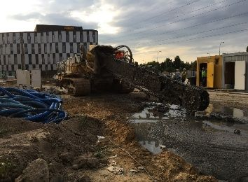
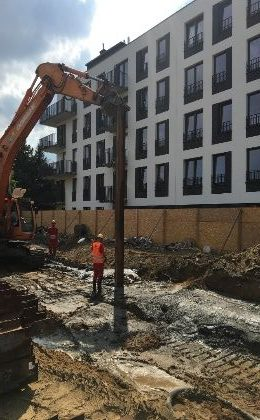
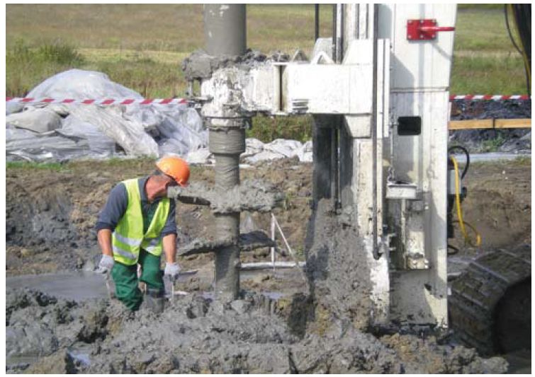
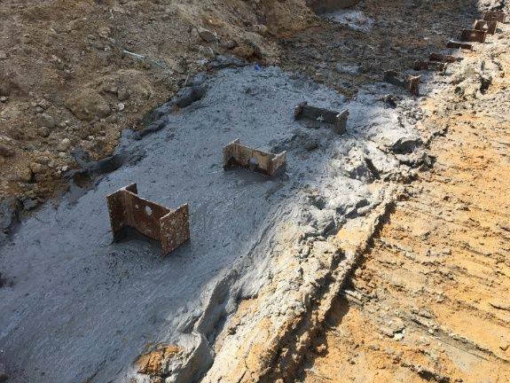
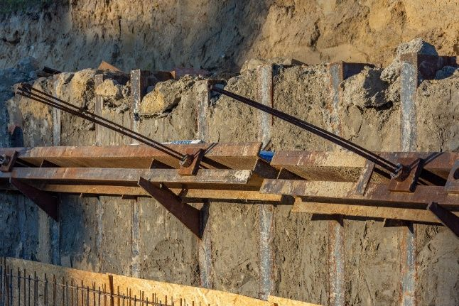
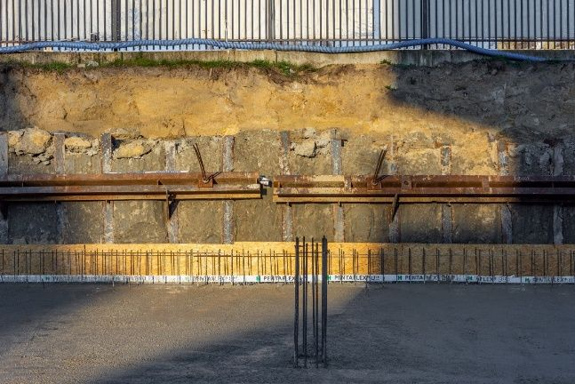
Szádfalak – acél szádfal
A szádfal a talajba vert, vibrált vagy sajtolt, egymáshoz hornyokon (zárakon) keresztül kapcsolt, többnyire acél elemek folytonos fala. A hornyos kialakítás miatt vízzáró kapcsolat alakítható ki. Lehet ideiglenes (ekkor visszahúzzák és újra felhasználják) és végleges is.
Leggyakrabban acél szádfalat használnak, különösen ideiglenes munkagödör-határoláshoz: a pallók könnyen verhetők, visszahúzhatók, vízzáró képességük a legjobb. Lehetnek egyenesek, félhullámúak (U és Z alakúak) vagy teljes hullámvonalúak; hazánkban elsősorban Larssen és Hoesch típusú pallókat használnak. Árvízvédekezésnél CS típusú pallókat is alkalmaznak – ezek átmenetet képeznek a csatornapallók és a szádfalak között.
- Lehajtás: diesel- vagy hidraulikus verőeszköz, illetve – főleg szemcsés talajban – vibrátor. A táblákat lépcsősen egyesével, vagy hatékonyabban 2–4 elemet összefogva hajtják le; leggyakrabban gyárilag párosával. Puha talajban sajtolás is lehetséges.
- Rezgés: beépített területen meg kell vizsgálni, nem okoznak-e kárt a lehajtás rezgései a környező építményekben – ezek 20–30 m-re is elhathatnak.
- Akadályok: törmelékes feltöltés, kemény (köves) agyag, vékony kőpadok – ilyenkor gyakran előfúrást alkalmaznak.
- Végleges alkalmazásnál külön korrózióvédelmi előírások vannak.
Alkalmazási példák (előadás)
- élővízzel érintkező munkatérhatároló falak
- közműépítések ideiglenes munkatérhatároló fala
- meglévő utak szélesítéséhez, rézsűjük elbontásához szükséges falak
- szűk hely, nagyon gyors építési idő esetén
- ahol a zaj- és rezgésterhelés megengedhető
Vibrálás: ellentétesen forgó excentertömegek függőleges rezgése „elfolyósítja” a szemcsés talajt a palló mentén. Verés (diesel- vagy hidraulikus kos): kötött, kemény talajban és az utolsó métereken. Besajtolás: a gép a már lehajtott pallókba kapaszkodik, ezek adják a reakcióerőt – rezgésmentes, csendes.
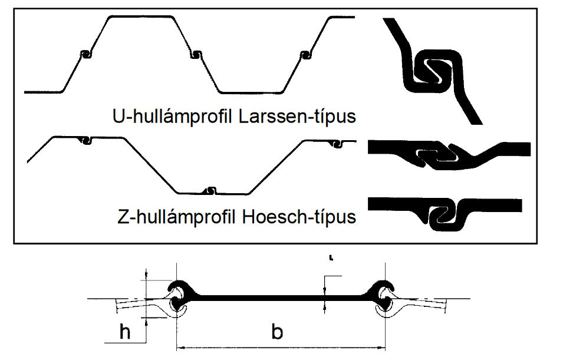
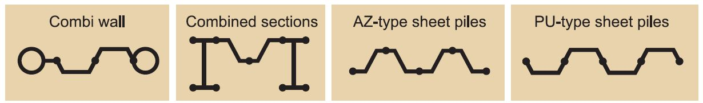
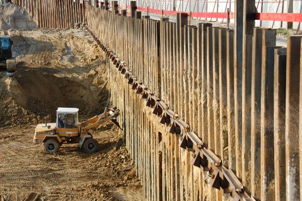
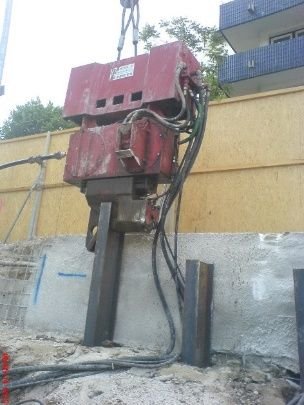
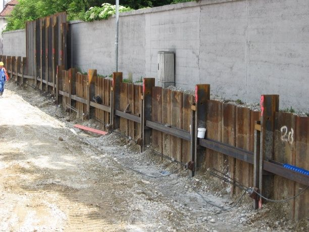
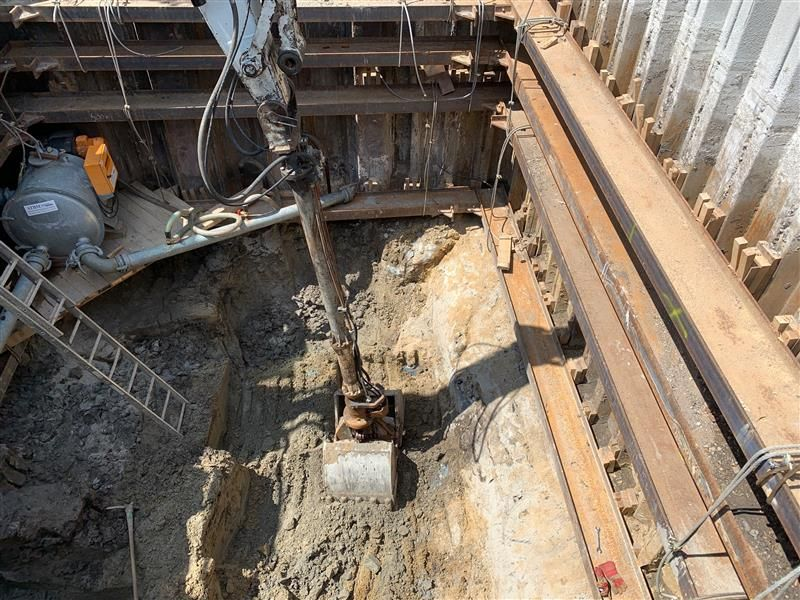
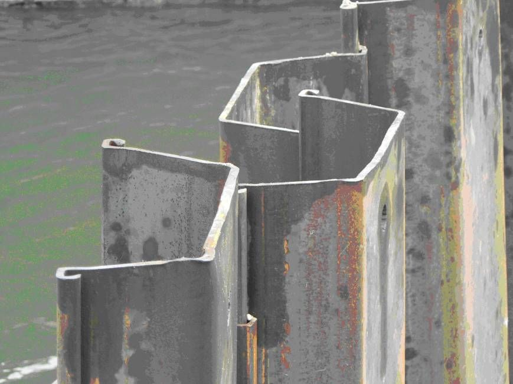
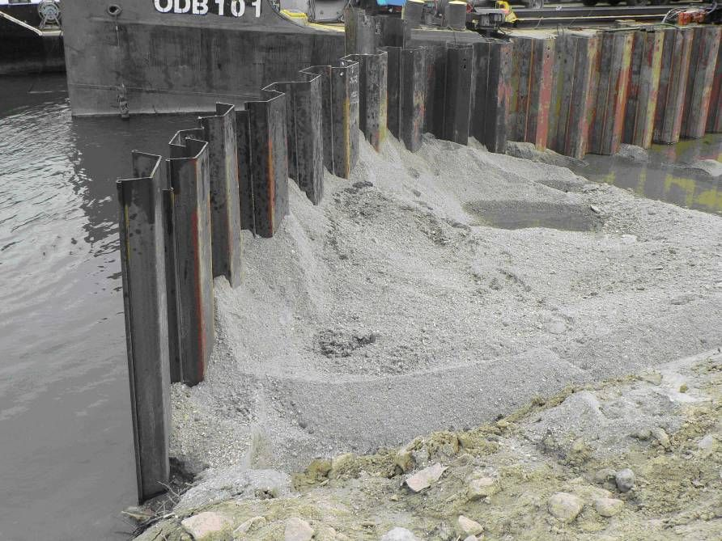
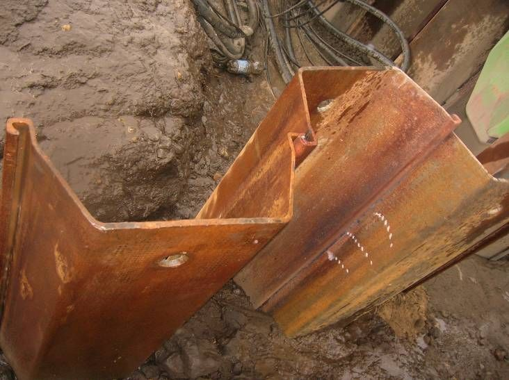
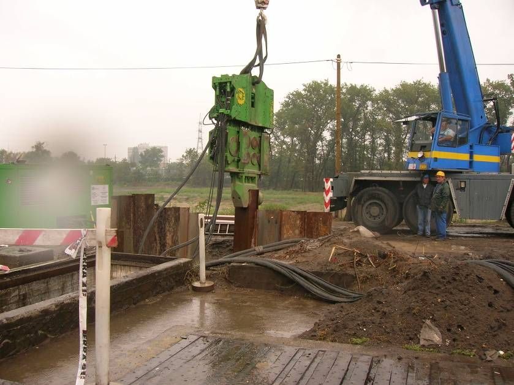
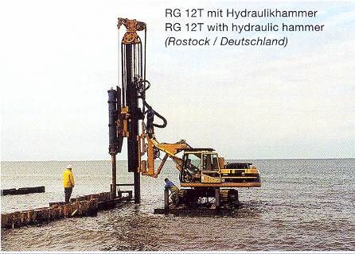
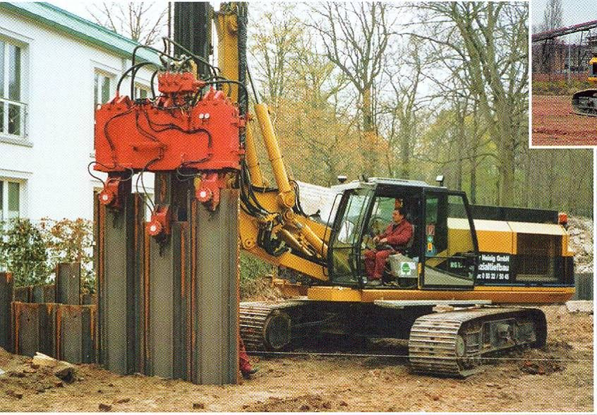
Fa, vasbeton és műanyag szádfal
Fa: ma már nem használatos. 2–6 m mélységig alkalmazták, csak végleges állapotban, mert a visszahúzás körülményes, és a fa roncsolódik. Először vezércölöpöket vertek le, közéjük hajtották a horony-eresztékes pallókat.
Vasbeton: végleges szádoláshoz, elsősorban kikötőkhöz, élővizekben, partvédelemhez. Hátránya a nagy súly – szállításra is méretezni kell (4–8 m hosszú elemek); előfeszítéssel csökkentik a súlyt. Lehajtása nehéz, vízöblítéssel segítik.
Műanyag: hazánkban még nem terjedt el. Végleges partfalaknál, kikötőknél, csatornák partjain használják (pl. Geoflex-rendszer): 30 cm széles „nyomott” hullámlemezeket vernek le vibrátoros, vízsugaras berendezéssel, nagyon puha talajban kotrógéppel benyomják. A lemezeket belső és külső szelvényből álló zár köti össze. Előnye a kis súly (kb. 9 kg/m²) – nem kellenek nehéz gépek.
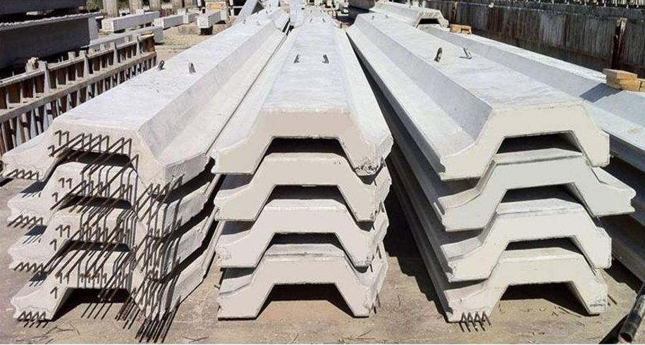
Már a rómaiak is használtak fa szádfalat, és a XIX. századig csak fából készült. Az acél szádfal 1902-ben, Brémában jelent meg (Tryggve Larssen). A tengervíz fröccszónájában egy acélfal 50 év alatt kb. 3,75 mm vastagságot veszíthet – a műanyag nem korrodál, de teherbírása jóval kisebb.
Cölöpfalak
A cölöpfalak hézagos vagy zárt (érintkező vagy összemetsző), jellemzően talajhelyettesítéses fúrási technológiával készülő helyszíni vasbeton – ritkábban vert/vibrált előregyártott vasbeton vagy acél – cölöpökből álló falszerkezetek. Hazánkban elsősorban talajvízszint feletti, esetleg csak szezonális rétegvizekkel érintett földkiemelések ideiglenes vagy végleges, nem vízzáró munkatérhatároló falaként népszerűek; a hazai piacon leggyakrabban a folyamatos furatmegtámasztást biztosító CFA technológia az optimális.
- Érintkező: ha a talaj önmagában nem állékony (szemcsés talaj), de nincs szükség vízzárásra, és statikailag sűrű kiosztás kell.
- Összemetsző: vízzáró fal készíthető vele, de a résfallal szemben csak speciális esetekben gazdaságos. Csak minden második cölöp vasalt: először a nem vasalt cölöpök készülnek, majd közéjük kb. 10–12 cm átfúrással a vasalt, nyomaték felvételére is alkalmas cölöpök. Változat: a vasalt cölöpök közötti hézagokat jet-oszlopok „töltik ki” – így nem vízzáró, de vízteleníthető munkatér alakul ki, kisebb technológiai erőfeszítéssel.
- Hézagos: hazai viszonyok között főleg ez terjedt el – nagyon kemény talajokban (agyagokban), puha kőzetekben, talajvizet el nem érő, szűk városi munkaterek határolására. A kedvező szilárdságú talaj miatt kevesebb cölöp is elég. A hézag vállalható mérete a talaj állékonyságától, átboltozódási képességétől függ: jellemzően 20–60 cm, legfeljebb a cölöpátmérő.
Különösen végleges falaknál gondoskodni kell a cölöpközökben időszakosan megjelenő rétegvizek elvezetéséről: mechanikailag rögzített betonacél háló, geotextília vagy felületszivárgó, és megfelelő védelemmel tervezett dréncsövek a cölöpközökben. A cölöpfal lehet konzolos, vagy acél csőtámaszokkal, talajhorgonyokkal, szerkezeti támaszokkal megtámasztott – ezek a cölöpöket felül összefogó vasbeton fejgerendához, mélyebben a cölöpök oldalára rögzített mellgerendákhoz kapcsolódnak.
Összemetsző falnál a primer cölöpök betonja gyakran szándékosan gyengébb vagy lassan kötő (akár 1–3 MPa, illetve 10–20 MPa) – hogy a szomszédos szekunder cölöp bele tudjon fúrni. A szekunder cölöp mindig teljes értékű, vasalt vasbeton.
A Paks II munkagödrét horgonyzott, 88 cm-es cölöpökből álló összemetsző cölöpfal határolja. Budapesti példa: a VII. kerületi Kertész utcai „Kertész25” társasház munkagödrét CFA-cölöpökből készült hézagos cölöpfal határolta.
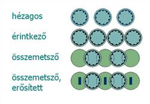
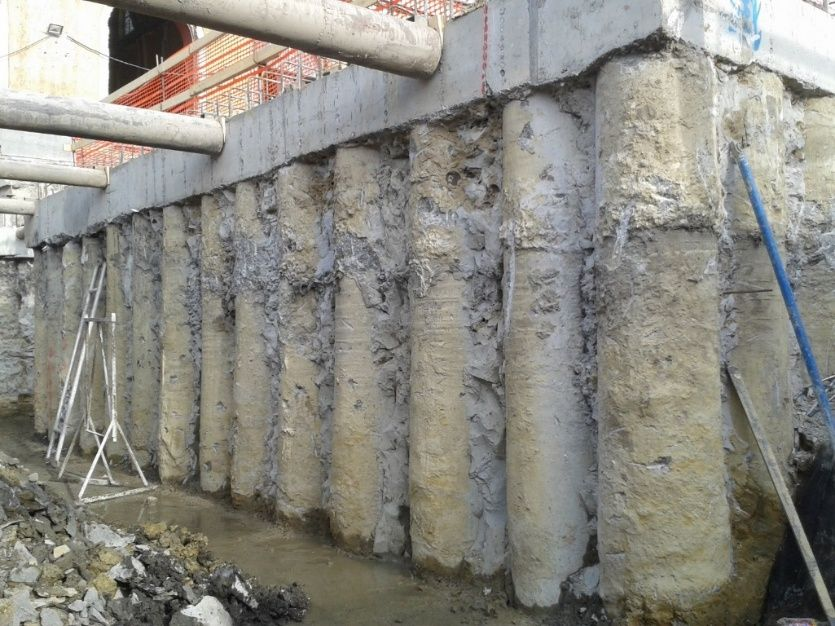
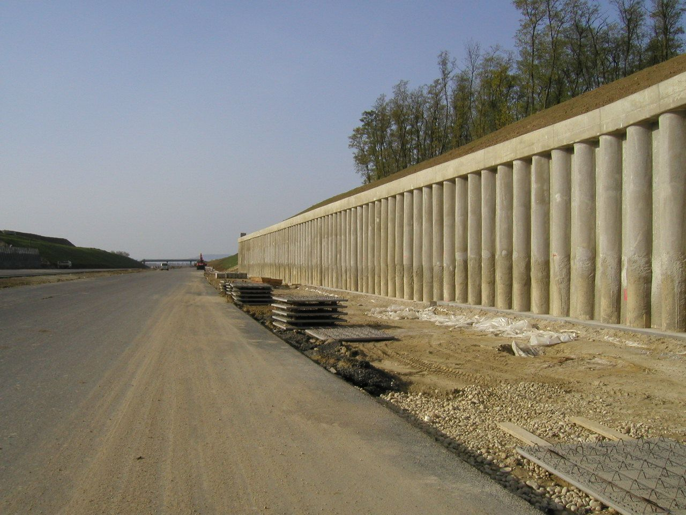
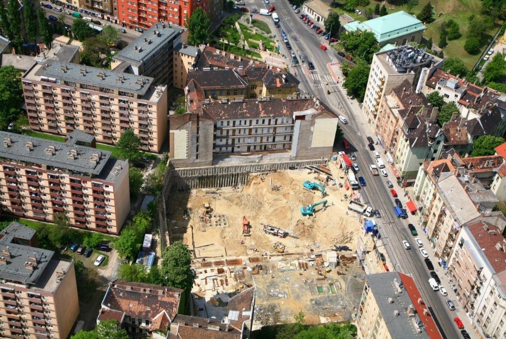
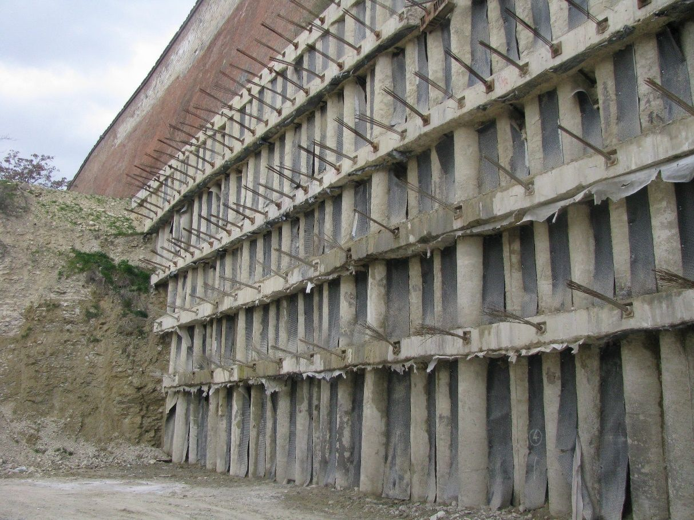
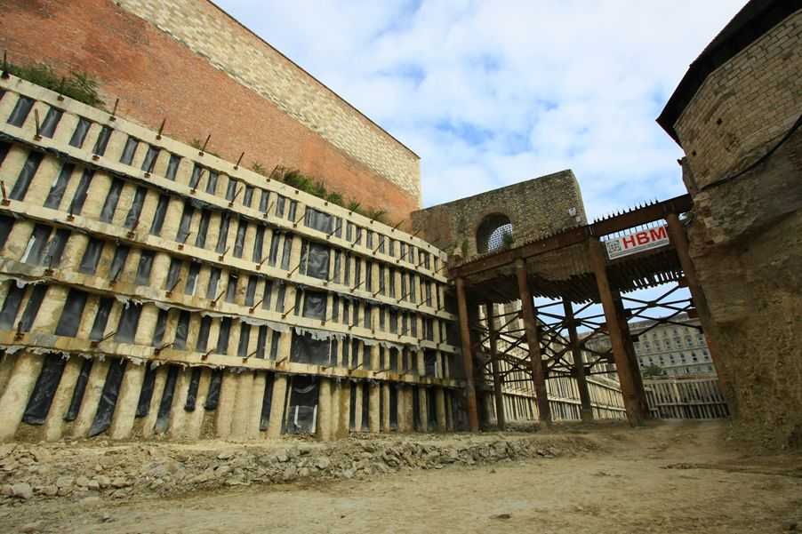
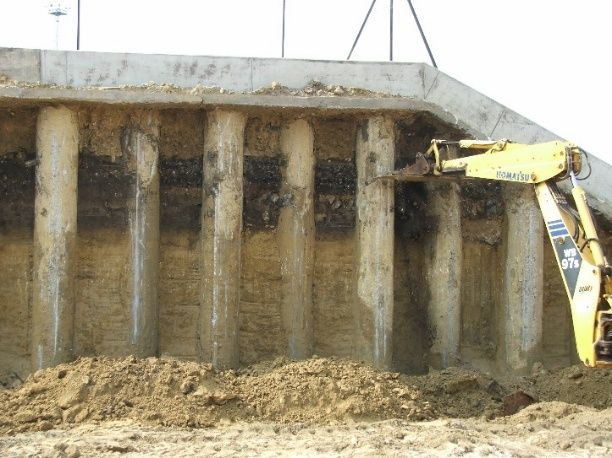
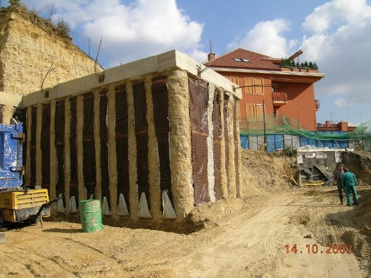
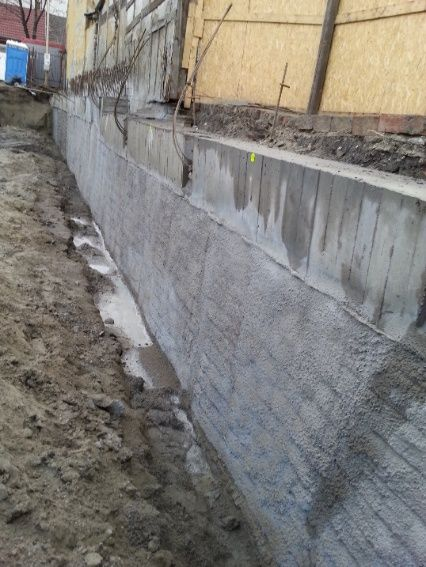
Réselt fal (résfal)
A résfalat a mélyalapozásoknál tárgyaltuk: zagymegtámasztás mellett markolt panelek, vasalókosár, víz alatti betonozás. Munkatérhatárolásként akkor választják, ha a gödör mély, a talajvíz magasan áll, a szomszédos épületek mozgása kritikus, és a fal a végleges szerkezet része lehet – ilyenkor a munkatérhatárolás egyben az alapozási rendszer is. Megtámasztása horgonyokkal, csőtámaszokkal vagy top-down födémekkel történik (lásd a megtámasztó szerkezeteknél).
Közel 10 000 m²-es, kb. 16 m mély munkagödör négyszintes mélygarázshoz a Duna partján: 80 cm vastag, két horgonysorral megtámasztott résfal, amely a vízzáró agyagba kötve a talajvizet is kizárja.
Források
- Munkatér határolások – jegyzet (BME Alapozás), 1.3–1.7. fejezet; Munkatérhatárolások – előadás (Dr. Móczár Balázs), 19–39. dia.
- Trägerbohlwand – de.wikipedia.org
- DIN 4124, 8.2 (pallózás, szabad földfal magassága) – umwelt-online.de
- BG BAU Baustein C 461: Trägerbohlwand – bgbau.de
- Ernst & Sohn mintafejezet: Konstruktive Maßnahmen zur Sicherung von Baugruben – wiley-vch.de
- History of the Berlin U-Bahn – en.wikipedia.org
- TUM Zentrum Geotechnik, Heft 39 (2007) – berlini dúcolat bontás közbeni omlása – tum.de
- Summary of the FHWA lagging table (pallóvastagság) – scienceinsights.org
- Implenia: Düsenstrahlverfahren (DSV) – implenia.com
- Keller UK: Jet grouting brochure – keller.co.uk
- Liebherr (szerk.): Spezialtiefbau – Kompendium, K12 Hochdruckinjektion – ernst-und-sohn.de
- PGA Tech: Difficult foundation problems solved by jet grouting (történet) – pgatech.com.ph
- Furch Grundbau: DSV (visszafolyás, emelkedés veszélye) – furch-grundbau.de
- Implenia: Schlitz-, Dicht- und Schmalwände – implenia.com
- Wuppertali Egyetem, disszertáció az egyfázisú tömítőfal-anyagokról – uni-wuppertal.de
- Keller: Slurry cut-off walls – keller.com
- Bauer Equipment: CSM Cutter Soil Mixing brosúra – equipment.bauer.de
- FFGb: Soil mix CSM wall – ffgb.be
- Fräswand – de.wikipedia.org
- Keller: Trench soil mix walls (TRD/TSM) – keller-na.com
- ArcelorMittal szádpalló-katalógus (AU, PU, AZ szelvénytáblázatok) – pdfcoffee.com
- ArcelorMittal: U sections / AZ sections / Installation / Durability – U, AZ, lehajtás, tartósság
- Spundwand (Larssen 1902, Bréma; Hoesch; római fa szádfalak) – de.wikipedia.org
- Massarsch, K. R. – Fellenius, B. H.: Fundamentals of vibratory driving – fellenius.net
- Hiller, D. M. – Crabb, G. I. (2000): Groundborne vibration caused by mechanised construction works, TRL Report 429 – trl.co.uk; képletek: vibrálás, verés (Arup Strutt)
- DIN 4150-3 határértékei (1. táblázat, idézve) – rezgésmérési jelentés
- Hong Kong EPD: Press-in method (zaj) – epd.gov.hk
- Pile Buck: Types of sheet pile (fa, vasbeton, műanyag) – pilebuck.com
- Bugajny, R.: Geoflex – grodzice PCV (2006) – nbi.com.pl
- Bohrpfahlwand – de.wikipedia.org
- Aarsleff: All about secant pile walls (primer szilárdság, függőleges tűrés) – aarsleff.co.uk
- Lindquist, E.: Advanced design and construction of secant pile projects (ADSC 2011) – malcolmdrilling.com
- Bauer/RTG: VDW – béléscsöves CFA (szekunder cölöpök 1–3 nap múlva) – agd-equipment.co.uk
- Telex (2025): Aszódi Attila Paks II-ről – a munkagödör összemetsző cölöpfala – telex.hu
- PBM Mélyépítő Kft. referenciák (Kertész25: CFA hézagos cölöpfal) – whb.hu
- Karvaly E.: MOL Campus munkatérhatárolása és alapozása (ÉPKO 2022) – ojs.emt.ro
- Valós felvételek: BME Építőipar – „Befogott támszerkezetek” lejátszási lista – youtube.com
Talajszegezés
Lépcsősen, felülről lefelé haladva egy raszterben szegeket fúrnak, vernek vagy lőnek a földfalba, a szegekre betonacél hálót rögzítenek, és a felületet lőttbetonnal borítják. A szegekkel „összevarrt” földtömeg úgy dolgozik együtt, mint egy súlytámfal – a talaj tartja meg önmagát.
Az elv: a talaj tartja meg önmagát
A szegezett fal nem a talaj elé épített szerkezet, hanem a talaj megerősítése. A sűrűn elhelyezett, nem feszített acélszegek a kis talajmozgások hatására húzást kapnak, és a teljes hosszukon súrlódással adják át az erőt. Így egy súlytámfal-szerű, együttdolgozó földtömeg alakul ki, amely megfelelő szeghossz esetén nagyobb magasságú munkaterek határolására is alkalmas.
A gödör felülről lefelé, fogásonként mélyül: minden fogásban kiemelés → szegek → (víztelenítés) → háló → lőttbeton, és csak a lőttbeton szilárdulása után jöhet a következő fogás. A módszer a megtámasztó szerkezetek közül a talajhorgonnyal rokon, de attól lényegesen különbözik (5.5).
Általában ideiglenes munkatérhatárolásra készül – például résfalak felett a felső 2–3 méteren –, de végleges rézsűstabilizálásra is használják; ekkor korrózióvédelem kell.
„A H mélységű munkagödör esetén a szegek szükséges hossza talaj függvényében 0,6–1,2 H között változik. Jellemzően a szegek rasztertávolsága 0,5–1,0 (1,5) méter.”
Az első szegezett falat 1972-ben építették Franciaországban, Versailles közelében: egy vasút szélesítésénél egy 18 m magas, 70°-os homokbevágást szegeztek meg. A francia CLOUTERRE kutatási program ajánlásai 1991-ben jelentek meg; a ’80-as évek végén Franciaországban évente már kb. 80 000 m² szegezett falat építettek.
Építés fogásról fogásra
Építsd fel a falat lépésenként! Állítsd a mélységet, a szeghosszt és a rasztert – a csúszólapon túlnyúló szegvégek (piros pontok) mutatják, hogy a szeg valóban „belekapaszkodik” a nyugvó talajba.
Az amerikai FHWA útmutató szerint a következő fogást csak akkor szabad kiemelni, ha a lőttbeton legalább 72 órás, vagy elérte a kb. 10,5 MPa szilárdságot. A fogás ideje alatt a szabadon álló földfalnak magától kell megállnia – ezért kell a talajnak rövid ideig 1–2 m magas függőleges falban állékonynak lennie.
Szegek, háló, lőttbeton, víz
A jegyzet négy szegtípust különböztet meg: vert, fúrt-injektált, jetelt és (esetleg) csavart szegeket. Anyaguk leggyakrabban 20–28 mm-es betonacél, de készülhetnek acélcsőből vagy acél szegekből is. Leggyakrabban – ha lehetőség van rá – a betonacél szegeket „puskákkal” verik be.
Háló
Jellemzően 6–8 mm átmérőjű, 150 × 150 mm-es raszterű betonacél háló, amelyet a szegekhez rögzítenek (pl. laposacél darabbal hegesztik). Állékony, agyagos talajban a lőttbeton kéreg el is hagyható – ekkor a háló alá geotextília kerül.
Lőttbeton
A felületet 8–15 (20) cm vastag lőttbetonnal borítják. Nedves eljárásnál a kész betont szivattyúzzák és a fúvókánál levegővel lövik ki; száraz eljárásnál a vizet a fúvókánál adják hozzá (több a visszapattanás és a por).
Víztelenítés
Rétegvizek esetén a lőttbeton mögé felületszivárgót tesznek (kivezetésekkel), vagy 1–3 m-es raszterben átfúrják a falat, dréncsövet helyeznek el, és a vizet átvezetik a falon – nem alakulhat ki visszaduzzasztás és víznyomás.
Korrózióvédelem
Végleges szegeknél kötelező: epoxi bevonat, polietilén tok (bordás PE-cső, a szeg körül habarccsal), katódos védelem (jegyzet). A nemzetközi gyakorlatban a PE-tokozás és a megfelelő habarcstakarás a leggyakoribb.
Kihúzó próba
A teherbírást kihúzó próbákkal ellenőrzik: üreges sajtó húzza ki a szeget a falról. Előbb próbaszegeken (alkalmassági vizsgálat), majd szúrópróbaszerűen a beépített szegeken – pl. a német engedély szerint a szegek legalább 3%-án, talajtípusonként legalább 3 db-on.
Gépek
Egyszerű, kis gépek: kotró a fogások kiemeléséhez, lánctalpas fúrógép vagy kotróra szerelt fúróárboc, habarcskeverő és -szivattyú, lőttbeton-gép. Akár darura függesztett állványról is dolgozhatnak.
Létezik ballisztikus szegvető: egy kotróra szerelt, sűrített levegős „ágyú” egyetlen lövéssel juttat egy kb. 6 m hosszú, 38–40 mm-es acél- vagy üvegszálas rudat a rézsűbe, kb. 350–400 km/h sebességgel – fúrás és kitermelt föld nélkül. Elsősorban sekély rézsűcsúszások gyors megfogására használják.
Hol alkalmazható?
A jegyzet szerint gyakorlatilag mindenféle talajban alkalmazható – néhány fontos kivétellel. Tippeld meg kártyánként, mielőtt felfordítod!
Előnyök
- relatíve alacsony költség
- egyszerű, kis gépek – szűk helyen is
- könnyen variálható, módosítható (szükség esetén)
- rugalmas szerkezet, jól adaptálható a különféle talajokhoz
- teherbírási tartalék, rezgésmentes építés
Hátrányok
- a talajnak 1–2,5 m-ig függőleges falban meg kell állnia
- magas és áramló talajvíz esetén nem alkalmazható (csak folyamatos víztelenítés mellett)
- a vízelvezetés nehezen oldható meg
- városban a sűrű szegmező – sokszor közterület, utca alá nyúlva – közművekbe ütközhet
- rugalmas fal: nagyobb mozgás, mint egy horgonyzott falnál
Szeg vagy horgony?
Első ránézésre hasonlóak: mindkettő a talajba fúrt, injektált acélelem, amely húzást visz. A működésük azonban alapvetően más – nézd meg, hogyan oszlik el bennük az erő!
| Talajszeg | Talajhorgony | |
|---|---|---|
| Feszítés | nincs – passzív elem | előfeszített (a tervezett erő 80–90%-ára) |
| Erőátadás | a teljes hosszán | csak a befogott (injektált) szakaszon; a szabad szakasz védőcsőben |
| Kiosztás | sűrű, 0,5–1,0 (1,5) m-es raszter | ritka, horgonysoronként, fej- vagy mellgerendán |
| Hossz | 0,6–1,2 H | legalább 8 m (4 + 4 m), legfeljebb 25–30 m |
| Teherbírás | kisebb | legalább egy nagyságrenddel nagyobb |
| Vizsgálat | próbaszegek + szúrópróba | minden horgonyról próbaterhelési jegyzőkönyv |
| Működés | „összevarrt” földtömeg, súlytámfal | a fal megtámasztása a csúszólapon túli talajra |
Források
- Munkatér határolások – egyetemi jegyzet, 1.8 fejezet (BME, Alapozás).
- Dr. Móczár Balázs: Alapozás – munkatérhatárolások, előadásanyag, 40–46. dia.
- FHWA GEC 7: Soil Nail Walls (FHWA-NHI-14-007, 2015) – highways.dot.gov
- FHWA GEC 7 (FHWA-IF-03-017, 2003) – rosap.ntl.bts.gov
- Caltrans: Soil Nail Walls, geotechnical manual – dot.ca.gov
- TRL 537: Soil nailing for slopes (Versailles 1972, CLOUTERRE 1991) – trl.co.uk
- Wikipedia: Soil nailing – en.wikipedia.org; Bodenvernagelung – de.wikipedia.org
- DIBt Z-34.13-208: DYWIDrill üreges rudas talajszegek (vizsgálati arányok, raszter) – dibt.de
- CETRA 2010: Use of soil nailed walls and slopes in transportation projects – cetra.grad.hr
- FFGB: Nailed wall – ffgb.be
- Keller UK: Soil nails – keller.co.uk
- Aarsleff: What are soil nails – aarsleff.co.uk
- Launched soil nails (TAC konferenciacikk) – tac-atc.ca; Geosynthetics Magazine – geosyntheticsmagazine.com
- GDOT SSP 628: Permanent Soil Nailed Walls (korrózióvédelem) – dot.ga.gov
Megtámasztó szerkezetek
A munkatérhatároló falak rendszerint a munkatér feneke alá nyúlnak: befogásuk a passzív földellenállás révén egy támaszt ad. Konzolosan – egyéb megtámasztás nélkül – azonban csak pár méteres (max. 4–6 m) kiemelésig állékonyak. Mélyebb gödörnél egy vagy több szinten meg kell támasztani őket, így határozatlan, többtámaszú tartók alakulnak ki.
A falak statikai vázai
A munkatérhatároló falak statikailag négy fő típusba sorolhatók (jegyzet 20. ábra):
- szabadon álló, befogott (konzolos) fal,
- egy szinten megtámasztott, szabadon támaszkodó fal,
- egy szinten megtámasztott, befogott fal,
- több szinten megtámasztott, szabadon támaszkodó fal.
A befogási mélység függvényében alakul ki tényleges befogás, vagy csak „támaszkodó” szerkezet: kis befogási mélységnél alacsony a befogási nyomaték. Minél mélyebb a gödör, annál inkább szükség van egy vagy több szintű megtámasztásra – a fal így határozatlan, többtámaszú tartó.
Próbáld ki a fal-laborban, hogyan változik a szükséges befogás, a támaszerő és a nyomaték a statikai váztól függően! Figyeld meg: egy horgony a konzolos falhoz képest drasztikusan csökkenti a befogási mélységet és a nyomatékot, a befogott talp pedig hosszabb falat, de kisebb mezőnyomatékot ad.
A jegyzet szerint ezekkel a számításokkal részletesebben a Földalatti műtárgyak, mélyalapozás tárgyban foglalkoztok. A fal-labor a klasszikus határegyensúlyi módszereket (Blum-féle befogott fal, szabadon támaszkodó fal, egyenértékű tartó, Peck-féle látszólagos földnyomás) mutatja be – a mai tervezés rugalmasan ágyazott tartó- és végeselemes modellekkel dolgozik.
Talajhorgonyok
A horgony a megtámasztott szerkezetről átadódó húzóerőt a teherviselő közegre (talajra, kőzetre) továbbítani képes szerkezet. A talajszegekhez hasonló, de lényegi különbségek vannak: nem a teljes hosszán veszi fel az erőt, jóval nagyobb (átmérőjű és hosszú), és teherbírása is legalább egy nagyságrenddel nagyobb.
Sokféle talajhorgony van, de leggyakrabban előfeszített, fúrt, injektált talajhorgonyokat használunk. Előnyük, hogy a munkagödör mögé nyúlnak, így „tiszta” építési terület marad – nincs dúc a gödörben.
A horgonyok rendszerint szomszédos ingatlanok alá nyúlnak – sokszor 15–20 méterre is. Ez egyrészt jogi problémákat vet fel (tulajdonosi hozzájárulás), másrészt a horgony meglévő műtárgyakba (pincébe, közműbe, alapozásba) ütközhet. Ahol a horgony később zavarna, kiszerelhető (pászmáiban visszahúzható) horgonyt is alkalmaznak.
Mire használják?
A horgony részei
Hogyan készül?
- Kiemelés a horgonysor alá – kb. 0,5 m-rel a tervezett horgonyszint alá; szükség esetén heveder, mellgerenda.
- Fúrás 15–30°-os hajlással, béléscsővel vagy fúróiszappal megtámasztva (példák a 24. ábrán).
- A feszítőelem behelyezése: 3–7 pászma (vagy Dywidag-rúd) távtartókkal; a szabad szakaszon védőcsőben, mellettük a mandzsettás injektálócső.
- Elsődleges injektálás alulról felfelé, miközben a béléscsövet kihúzzák.
- Utóinjektálás nagy nyomással a mandzsettás csövön át – a habarcstest megreped, kiszélesedik.
- Szilárdulás 8–12 napig.
- Feszítés és próbaterhelés üreges feszítősajtóval, lépcsőkben – minden horgonyról próbaterhelési jegyzőkönyv készül.
- Lekötés a tervezett igénybevétel 80–90%-án: az ékek rögzítik a pászmákat a horgonyfejben. Jöhet a következő kiemelési szint.
| Osztályozás szempontja | Típusok (előadás, 56. dia) |
|---|---|
| Élettartam | ideiglenes (T ≤ 2 év, pl. dúcolás) · tartós, mint a szerkezet (pl. hídfő) – korrózió! |
| Befogás módja | injektált szakasszal (köpenymenti nyírás) · mechanikus szerkezettel („esernyős”) · expandált testtel |
| Felszíni horgonyok | horgonycölöphöz rögzítve (passzív) |
| Teherviselő elem | acél feszítőkábel (általános, nagy erőre) · acél magrúd (csavarbordás, kisebb erőre) · üveg- vagy szénszálas rúd (FRP, korrózió ellen) |
| Készítés | gyártmány, üzemben készítve · helyszíni szerelés (csak ideiglenes!) |
Hazánkban a fúrt, injektált talajhorgonyok szinte mindig ideiglenes funkcióval, legfeljebb 2 éves élettartamra készülnek. Az állandó horgonyok elsősorban a szigorúbb korrózióvédelemben (teljes hosszon védőcső, habarcs) és az ellenőrizhetőség, utánfeszíthetőség igényében térnek el – partfalaknál, hegyvidéki kőzetrézsűknél, hídfőknél.
Tervezd meg a horgonyt!
A befogott szakasznak az aktív csúszólapon túl kell lennie – ezért a horgony hossza a gödör mélységével gyorsan nő. Figyeld a telekhatárt és a szomszéd pincéjét!
Próbaterhelés és lekötés
Minden egyes horgonyról próbaterhelési jegyzőkönyv készül: a feszítősajtó lépcsőkben, ciklusokban terheli a horgonyt, és mérik a fej elmozdulását. A rugalmas megnyúlásból az is ellenőrizhető, hogy a szabad szakasz valóban szabadon nyúlik-e. A végén a horgonyt a tervezett igénybevétel 80–90%-ára lekötik.
Az injektált talajhorgony 1958-ban született egy müncheni kavicsos munkagödörben: Karlheinz Bauer a megbízhatatlanul rögzíthető horgonyrudakat egyszerűen beleinjektálta a kavicsba (szabadalom: DE1104905). Előfeszített kőzethorgonyt már 1934-ben használtak egy algériai gátnál. Egyetlen Ø15,7 mm-es pászma szakítóereje kb. 279 kN – közel 28 tonna.
Acél csőtámaszok
A szélesebb munkatérhatárolások közel derékszögű sarkaihoz közel eső, vagy egymástól nem túl távoli szemközti falszakaszainak összetámasztására leggyakrabban acél csődúcokat alkalmaznak. Hazai viszonyok között általában akkor gazdaságos:
- ha talajhorgonyok készítésére nincs lehetőség a nem megfelelő altalajviszonyok vagy a már beépített szomszédos földalatti terek miatt;
- ha a tervezett munkatér mélysége meghaladja a 15–20 m-t, és a szomszédos, jelentős felszínmozgásoktól védendő szerkezetek miatt horgonyokkal nem építhető kellően merev, kis alakváltozású fal.
Ezért elsősorban szűk munkatereknél – közúti, gyalogos aluljárók, kis alapterületű vízépítési műtárgyak – vagy nagyon mély városi munkatereknél, pl. metróállomásoknál népszerű (a jegyzet szerint így készült az M4-es metróállomások támaszrendszere is). A munkatéren belüli munkát nehezíti, de alacsony élőmunka-igénye, újrafelhasználhatósága és a horgonyzás egyre gyakoribb ellehetetlenülése miatt hazai előtérbe kerülése várható.
A csőtámok általában a falak felső síkján vagy közbenső szintjein húzódó fej- vagy mellgerendákhoz kapcsolódnak, így egy dúc több falelemet (réspaneleket, cölöpöket, szádpallókat) támaszt meg. A falhoz a dúc homloklemezéhez kapcsolódó fúrt-ragasztott rögzítőelemekkel, vagy a falba előre bebetonozott homloklemezhez kötik.
A londoni Crossrail Paddington állomásnál a dúcerők naponta ingadoztak: reggel 8 körül voltak a legkisebbek, este 7 körül a legnagyobbak. A hőmérsékleti többleterő a dúc tervezési terhének akár 50%-a is lehet. Egy londoni gödörben (Merchant Square) 49 m-es fesztávú, 1,22 m átmérőjű, 500 t teherbírású dúcok dolgoztak.
Támaszfödém – a milánói („top-down”) módszer
Először a munkatér határoló szerkezeteit (résfal, cölöpfal) készítik el. Ha közbenső támaszok-pillérek is vannak, felülről elkészítik azok alapozását (cölöpözését) és elhelyezik a pilléreket. Ezután földzsaluval elkészül a felső födém, amely tárcsaként megtámasztja a határolófalakat. A további szintek építése bányászati módszerekkel történik – a födémekben kihagyott földkiadó nyíláson, távolabbra épített szállítóalagúton, vagy a műtárgy mellé épített „zseben” keresztül.
Technikai nehézségek
A támaszfödém alátámasztását (pilléreket) előre, takarásban kell elkészíteni – a pontosság nagyságrenddel elmarad a hagyományos szerkezetépítésétől.
A földkitermelést a támaszfödém alatt, szűk térben kell végezni.
A zárt munkatér szellőzését, bevilágítását biztosítani kell.
Az előre elkészült pillérekhez utólag kell kapcsolni a födémeket; az alépítmény falai a födémek takarásában, utólag készülnek – a monolitikus kapcsolatok nehezen alakíthatók ki.
Előnyök
Miért éri meg?
- lerövidül az építési idő: épületnél a fel- és alépítmény párhuzamosan épülhet
- a környezet zavarása javarészt megszűnik, a felszín hamar helyreállítható
- a födémek zsaluállványzat nélkül, földre fektetve épülhetnek
- a födémtámaszok nagy merevséget adnak – kis falmozgás
Az M4-es metró két állomása – a Bikás park (Tétényi út) és az Újbuda-központ (Bocskai út) – a forrás szerint top-down, „milánói” módszerrel épült. A módszer felszíni lezárást csak kb. 6–8 hónapra igényel állomásonként. A nevét a milánói M1-es metró (1957–1964) építéséről kapta, ahol először alkalmaztak nagy léptékben résfalakat földalatti vasútnál.
Passzív hátrahorgonyzás
A passzív horgony lényege, hogy a falszerkezet megtámasztását egy, az általa megtámasztott földtömeg mögött kellő távolságban lévő szerkezethez – pl. egy másik falhoz vagy cölöpsorhoz – kapcsolódó, húzóerő felvételére alkalmas elem biztosítja.
Ha a munkagödör mellett van hely, a szakadólapon kívül levert I vagy U tartókhoz, esetleg cölöpökhöz betonacélokkal vagy horgonyrudakkal – a felszín alatt 0,8–1,0 m-re, egy keskeny árokban elhelyezve – hátrahorgonyozható a fal. Nagyobb gödröknél (nagyobb erőknél) cölöpfalhoz, résfalhoz horgonyoznak, és a kikötéshez vasbeton gerendát használnak.
A feszített horgonyokhoz képest a különbség: feszítőerő hiányában a fal várható mozgásai nagyobbak, jellemzően néhány centiméteresek. Végleges szerkezetként vasbetonból vagy korrózióvédett nagyszilárdságú acélrudakból készülhetnek. Különösen partfalak megtámasztásánál, illetve közúti nyitott aluljárók mélyebb szakaszainál gyakori; városban a helyhiány miatt ritkább.
A horgonyrudakat nem feszítik elő: a feszítőzárral csak a lazaságot veszik ki (kézzel, nagy rudaknál sajtóval kb. 30–60 kN-nal), majd a rudakat homokkal, tömörítve visszatöltik. A rúd csak akkor kap erőt, amikor a kiemelés során a fal néhány centimétert elmozdul, és a horgonyfal előtt kialakul a passzív földellenállás. A dublini kikötőben például akár 29 m hosszú, M140-es horgonyrudak tartják a partfalat.
Források
- Munkatér határolások – egyetemi jegyzet, 1.9 fejezet (BME, Alapozás).
- Dr. Móczár Balázs: Alapozás – munkatérhatárolások, előadásanyag, 47–68. dia.
- Caltrans: Ground Anchors – geotechnical manual (szabad hossz: csúszólap + max(5 ft; H/5)) – dot.ca.gov
- FHWA GEC 4: Ground Anchors and Anchored Systems (FHWA-IF-99-015) – rosap.ntl.bts.gov
- STRUCTURE magazine: Are you properly specifying ground anchors? – structuremag.org
- Merrifield, Møller, Simpson, Farrell (2013): European practice in ground anchor design related to EC7 – cfms-sols.org
- EN ISO 22477-5:2018 – horgonyvizsgálatok (TM1–TM3) – standard.no
- DIBt ETA-15/0551 (pászmák, 6 mm-es ékbehúzódás) – dibt.de
- BAUER Spezialtiefbau: horgonyok (fúrási módok, utóinjektálás) – bauer.de
- Wikipedia: Verpressanker (1934, 1958, Bauer-szabadalom) – de.wikipedia.org
- DYWIDAG: kiszerelhető pászmás horgony (QuickEx) – dywidag.com
- FFGB: Ground anchors and nails (NBN EN 1537) – ffgb.be
- Chambers, Augarde, Reed, Dobbins (2016): Temporary propping at Crossrail Paddington station – durham-repository.worktribe.com
- Zaremba & Lehane (2007): Steel struts in a braced excavation in Perth CBD – australiangeomechanics.org
- MabeyHire: Feeling the heat (hőmérsékleti dúcerő) – mabeyhire.co.uk
- The Construction Index: Super struts (MP500, 49 m) – theconstructionindex.co.uk
- Metro4.hu: How is it constructed – station building – metro4.hu
- Kálmán E.: New Metro Line Construction in Budapest (DBR Metro) – geovil.hu
- Wikipedia: Deckelbauweise – de.wikipedia.org; Slurry wall – en.wikipedia.org; Milan Metro – en.wikipedia.org
- Anker Schroeder: Dead-man tie rods – telepítés, lazaság kivétele, Dublin Port – anker.de
- Caltrans Trenching & Shoring Manual, 10. fejezet (horgonyfal elhelyezése) – dot.ca.gov
- Flexible retaining walls & sheet pile bulkheads (konzolos és horgonyzott falak határegyensúlyi módszerei) – open-exam-prep.com
Különleges megoldások
Mit tegyünk, ha a talajvizet semmilyen fallal nem tudjuk kizárni, ha a munkatér egy folyó közepén van, vagy ha a vízszintet tilos lesüllyeszteni? Ilyenkor jönnek a különleges megoldások: a talajt megfagyasztjuk, a folyóban gátat építünk, vagy a gödör alját víz alatt betonozzuk le – és lehorgonyozzuk.
A munkatérhatárolás lehetséges módjai között a jegyzet felsorolja a gátakat (élővízben) és a fagyasztott falakat is, az előadás pedig a talajhorgonyok egyik példájaként mutatja be a víz alatti alaplemez lehorgonyzását. Ezeket a jegyzet nem részletezi – az alábbi kiegészítés szakirodalmi és webes forrásokon alapul (lásd a fejezet végén).
Fagyasztott fal
talajfagyasztás · ground freezing · BodenvereisungA talajfagyasztás lényege, hogy a talaj pórusvizét megfagyasztjuk: a jég összeragasztja a szemcséket, és a talaj maga lesz a munkatérhatároló fal – egyszerre vízzáró és teherbíró. Bármilyen víztelített talajban működik (homok, iszap, vegyes feltöltés), szabálytalan alaprajzzal és nagy mélységben is, vegyszer nem kerül a talajba, és a fal teljesen visszafordítható: a hűtés leállítása után felenged.
A kiemelés vonalán kívül, általában 2–3 m-re, egy vagy több sorban, jellemzően kb. 1 m-es osztással (0,9–1,5 m) fagyasztócsöveket fúrnak le. A fúrás pontossága kulcskérdés: ha két cső mélyen eltávolodik egymástól, rés maradhat a falban. A zárt végű külső csőben nyitott ejtőcső van – a hűtőközeg a belsőben lefelé, a gyűrűs térben felfelé áramlik. A csövek között hőmérő-csövek ellenőrzik, hogy a fal összezárt-e.
A munkafolyamat
- Tervezés: rétegsor, víztartalom, sótartalom – és a legkritikusabb: a talajvíz áramlási sebessége.
- Fúrás, csövek: fagyasztócsövek és hőmérő-csövek egy vagy több sorban, a furatok ferdeségének bemérésével.
- Hűtés: sólével (hűtőgép, zárt kör, kb. −30 °C) vagy folyékony nitrogénnel (−196 °C, tartálykocsi, a gáz elpárolog).
- Aktív fagyasztás: a csövek körül jéghengerek nőnek, majd összefüggő fallá zárnak; ezt a hőmérséklet és a belső víznyomás emelkedése jelzi.
- Kiemelés a fagyott fal védelmében, rövid szakaszokban, azonnali lőttbeton (vagy elemes) ideiglenes biztosítással.
- Fenntartó fagyasztás a végleges szerkezet elkészültéig – az indító energia kb. 30–50%-ával. Gyakori kombináció: gyors indítás nitrogénnel, fenntartás sólével.
- Felengedés: a hűtés leállítása után figyelni kell a fagyemelés utáni olvadási süllyedésre.
Előnyök
- egyszerre vízzáró és teherbíró
- szinte bármilyen víztelített talajban, nagy mélységben is
- szabálytalan alaprajzhoz, alagútból is fúrható
- nem kerül vegyszer a talajba, teljesen visszafordítható
Hátrányok
- drága és energiaigényes, sólével lassú
- áramló talajvíz meghiúsíthatja a záródást
- fagyemelés, olvadási süllyedés a szomszédban
- a fagyott (főleg agyagos) talaj kúszik; pontos fúrás kell
- nitrogénnél zárt térben fulladásveszély
Az állomás dobozát a felszínről építették; a Duna-part alá nyúló peronalagutak bányászati módszerrel (NATM), talajfagyasztás védelmében készültek. A fagyasztócsövek helyzetét 3D-s fúrólyuk-felméréssel ellenőrizték.
Az első mesterséges talajfagyasztást 1862-ben, Dél-Walesben alkalmazták aknamélyítésnél. Friedrich Hermann Poetsch 1883-ban szabadalmaztatta az eljárást: futóhomokban mélyített aknát fagyasztással. Ma alagutak keresztjáratainál, folyók alatti alagutaknál, TBM-indítóaknáknál és résfalhézagok utólagos tömítésénél is használják.
Gátak élővízben
cofferdam · FangedammHa folyóban vagy tóban kell száraz munkatér – például egy hídpillér alapozásához –, a munkaterületet körbezárják, és kiszivattyúzzák belőle a vizet. A „cofferdam” szó a latin cophinus, azaz kosár szóból ered. A gátnak koronájával legalább kb. 0,9 m-rel (illetve a várható hullámmagasságnál jobban) a mértékadó vízszint fölé kell érnie – ez a szabadmagasság.
Föld- vagy kőszórásos gát
Sekély, lassú vízben; agyagmaggal vagy szádfallal tömítve. Olcsó, de széles: szűkíti a medret, és erodálódik.
Egyfalú, merevített szádfalgát
Szádfalgyűrű belső merevítő keretekkel – tipikusan hídpillérnél, víz alatti betondugóval.
Kétfalú, töltött szádfalgát
Két szádfal, köztük homok/kavics töltés, átkötő rudakkal: súlytámfal, belül nem kell dúc.
Cellás szádfalgát
Homokkal töltött acélcellák (Ø 8–30 m): önálló gravitációs fal mély vízben, hosszú szerkezetnél.
Hídpillér szádfalas gátban – lépésről lépésre
- Uszály, úszódaru vagy szerelőhíd; vezetőcölöpökre kerül a merevítő keret – ez egyben a szádfalverés sablonja.
- Szádfalverés a sodrás felőli oldal közepéről indulva, két irányba, lépcsősen; a gyűrűt nem a sarokban zárják.
- Víz alatti kiemelés markolóval – a víz bent marad, ellensúlyozza a külső nyomást; szükség esetén alapcölöpök.
- Víz alatti betondugó kontraktor eljárással: a cső vége végig a friss betonban marad, a beton alulról, „párnaként” emelkedik.
- Szilárdulás (néhány nap) után leszivattyúzás; a víznyomás összeszorítja a zárakat, a szivárgás csökken. Közben újabb dúcszintek kerülhetnek be.
- A pillér építése szárazon, végül visszatöltés, elárasztás (víznyomás-kiegyenlítés), a keretek bontása és a pallók kihúzása.
Leszivattyúzáskor alulról a teljes víznyomás hat a gödör aljára. Ha a betondugó (és a cölöpökhöz való tapadása) kevés, a fenék másodpercek alatt felszakadhat, és a víz elönti a munkateret. Horgonyzás nélkül a betondugó vastagsága nagyjából a víztelenített mélységgel azonos nagyságrendű.
Az M0 északi Duna-hídjának mederpillérei a folyami hidaknál bevált vasbeton kéregelemes módszerrel épültek: a kéregelemekre csavarozott 5 m magas acél őrfal mellett a munkatér a 101,00 mBf építési vízszintig szárazon tartható volt, a kéregelemek pedig zsaluzatként bebetonozódtak. A cölöpöket összefogó alaptest a víz alatti betonozással együtt 4,5 m magas.
Víz alatti alaplemez lehorgonyzással
előadás 53. dia · UnterwasserbetonsohleHa a talajvíz magasan van, a vízzáró réteg nagyon mélyen, és a vízszintet nem szabad lesüllyeszteni (a szomszéd épületek süllyedése, a fák kiszáradása vagy vízjogi tilalom miatt), a munkagödröt víz alatt emelik ki. Az alját víz alatti betonlemez zárja, amelyet sűrű rácsban készülő húzott cölöpök (horgonyok) tartanak lent a felhajtóerő ellen.
Az előadás sorrendje: körbezárás szádfallal → ideiglenes munkaszint → horgonyzás → víz alatti betonozás → horgony rögzítése. A gyakorlatban közben a gödröt víz alatt emelik ki („mesterséges tó”), a horgonyfejeket búvárok tisztítják meg, a betonozás után pedig fokozatosan leszivattyúzzák a vizet.
A berlini Lehrter Bahnhof (ma: Berlin Hauptbahnhof) munkagödreit 1,5 m vastag víz alatti betonlemez zárta le, amelyet 6500 GEWI-cölöp rögzített 2,7 m-es rácsban (Ø 63,5 mm-es rudak, 17,5–26,4 m hosszan). A Potsdamer Platzon a 90-es években kb. 24 000 m²-en, 20 m mélyen emeltek ki víz alatt – egész „mesterséges tavak” keletkeztek a város közepén.
Előnyök
- nincs talajvízszint-süllyesztés: a szomszédok nem süllyednek
- vékony (1–1,5 m) lemez a sok méter helyett
- kevés maradék szivárgás
Hátrányok
- búvármunka, kényes víz alatti betonozás
- sok húzott cölöp, lassú munkaciklus
- a lemez–horgonyfej kapcsolat kritikus
Források (7. fejezet)
- Munkatér határolások – jegyzet, BME Alapozás (a módszerek felsorolása) és az Alapozás – munkatérhatárolások előadás (Dr. Móczár Balázs), 53. dia: víz alatti alaplemez lehorgonyzása.
- Wikipedia (de): Bodenvereisung – de.wikipedia.org/wiki/Bodenvereisung
- Wikipedia (de): Gefrierverfahren – de.wikipedia.org/wiki/Gefrierverfahren
- Wikipedia (en): Ground freezing – en.wikipedia.org/wiki/Ground_freezing
- Konietzky, H. (TU Bergakademie Freiberg): Ground freezing – geotechnics.webador.de
- Itasca / Mining Report Glückauf (2021): Numerische Simulation eines Gefrierschachts – mining-report.de (PDF)
- Keller North America: Ground freezing – keller-na.com
- Gontaszewska-Piekarz, A.; Preidl, W. (2020): a talajfagyasztás története, Kwartalnik Historii Nauki i Techniki 65(3) – ejournals.eu (PDF)
- Poetsch, F. H.: US Patent 300,891 (1884) – patents.google.com/patent/US300891
- Kálmán E.: Budapest Metro Line 4 (előadás, Ljubljana) – geovil.hu (PDF)
- We Love Budapest: 10 éves a 4-es metró – érdekességek – welovebudapest.com
- Wikipedia (en): Cofferdam – en.wikipedia.org/wiki/Cofferdam
- PDHonline G113: Design loads and construction of tremie sealed cofferdams – pdhonline.com
- Purdue University CEM: Process simulation for temporary cofferdams (US 231, Wabash folyó) – engineering.purdue.edu
- ArcelorMittal: AS 500 straight web sheet piles (cellás szerkezetek) – sheetpiling.arcelormittal.com
- Garlich, M. (WSDOT Bridge Engineering Seminar 2017): Marine cofferdams – wsdot.wa.gov (PDF)
- Caltrans Foundation Manual, 12. fejezet (cofferdams, tremie seal) – dot.ca.gov (PDF)
- Kisbán S.: Az M0 körgyűrű északi Duna-hídja 4. – Alépítmények, pilonszerkezet. Vasbetonépítés 2009/2, 38–43. o. – real-j.mtak.hu (PDF)
- DYWIDAG: Piles secure Lehrte transit station against uplift – dywidag.com
- Zement-Merkblatt B 12: Unterwasserbeton – beton.org (PDF)
- DBZ: Technische Erläuterungen Baugrubensicherung, James-Simon-Galerie Berlin – dbz.de (PDF)
- Universität Wuppertal: Pfingstexkursion 1997 (berlini munkagödrök) – uni-wuppertal.de (PDF)
- Philipp Holzmann AG: DE2022787A1 – víz alatti betonlemez felúszás elleni rögzítése (1970) – patents.google.com
- MC-Bauchemie: Potsdamer Platz, 1990-es évek – mc-bauchemie.com
3D gödörtervező
Rakd össze a saját munkagödrödet! Válassz talajprofilt, határoló falat és megtámasztást, add meg a mélységet, a talajvizet és a szomszéd épület távolságát – majd ásd ki a gödröt. Az ellenőrző lista a jegyzet szabályai alapján azonnal jelzi, mi működik, mi kockázatos és mi nem megy.
8 m mély gödör, a talajvíz −5 m-en. Mi történik a kiemelés végén? Kapcsold be a víztelenítést – és figyeld a szomszéd épületet. Utána próbáld szádfallal.
Hézagos cölöpfal kemény agyagban, 8 m mélyen, horgony nélkül. Húzd a mélységet 4 m-től felfelé: hol vált a lista sárgára, majd pirosra? Adj hozzá horgonysort!
Résfal két horgonysorral, a szomszéd ház 3 m-re. Kapcsold be a röntgent! Ezután válts csőtámaszra – és növeld a gödör szélességét 30 m fölé.
Talajszegezés puha, telített agyagban, a talajvíz 2 m-en. Miért piros szinte minden? Próbáld ki ugyanezt a budai kemény agyagban.
A szabályok a jegyzet és az előadás adataiból valók: konzolos fal max. 4–6 m (1.9. fejezet); a berlini dúcolat, a hézagos cölöpfal és a talajszegezés nem vízzáró, ezért csak talajvíz felett vagy víztelenítéssel használható (1.3, 1.7, 1.8); a zagyfal jellemzően legfeljebb 7–10 m mély munkatérhez optimális (1.5); a szádfal lehajtásának rezgése 20–30 m-re is elhathat (1.6); a horgonyok 15–20 m-re a szomszéd telkek alá nyúlhatnak, a teljes hossz legfeljebb 25–30 m (1.9.1); a csőtámasz 25–28 m felett közbenső alátámasztást kíván, 10–15 m felett a hőtágulás meghatározó (1.9.2). A támaszszintek számát egy egyszerű, szemléltető ökölszabály becsüli – valódi tervezéshez földnyomás- és szerkezeti számítás kell (Földalatti műtárgyak tárgy).
Melyiket válasszam?
Nincs „legjobb” munkatérhatárolás – csak az adott helyre legjobban illő. A jegyzet szerint a határolás módja a rendelkezésre álló területtől, a talajtól, a talajvízviszonyoktól, a nyitvatartás idejétől, a környezet beépítettségétől, a létesítmény méreteitől és a rendelkezésre álló eszközöktől függ – és sokszor több megoldás kombinációja adja a választ.
A falszerkezet és a megtámasztás nem független: egy hajlékony berlini dúcolat érzékeny szomszéd mellett merevebb megtámasztást kíván, egy vízzáró fal pedig csak akkor ér valamit, ha a vízzáró rétegbe köt – vagy ha a gödör alját is lezárjuk. A víztelenítést mindig a munkatérhatárolással együtt kell megtervezni, és egyes rendszereknél (pl. résfal) a határolás egyben az alapozás is.
Te vagy a tervező!
Nyolc valós helyzet – mindegyikhez egy jó megoldás tartozik. Válassz, és olvasd el az indoklást!
Záróvideó: mélygarázs munkagödre
Kétszintes mélygarázs talajvíz alatt, közvetlenül a telekhatáron álló házak mellett – melyik megoldást választanád? A videó végigviszi a döntést, majd összefoglalja a sorozat összes technológiáját.
Források (9. fejezet)
- Munkatér határolások – jegyzet, BME Alapozás: a munkagödör méretét és a határolás módját meghatározó tényezők; az egyes módszerek alkalmazási feltételei.
- Alapozás – munkatérhatárolások, előadás (Dr. Móczár Balázs), 3–5. és az egyes technológiák diái.
- Az egyes megoldások részletes forrásai az adott fejezetek végén találhatók.
Videótár
Mind a 19 animációs videó egy helyen – mindegyik 2–2,5 perc, mindegyik más zenével. A lejátszóban Szóköz = szünet, F = teljes képernyő, Esc = bezárás; az ablak alján lapozhatsz a videók között.
Így néz ki a valóságban
BME Építőipar csatorna · „Befogott támszerkezetek” lejátszási listaAz animációk után érdemes megnézni, hogyan készülnek ezek a szerkezetek egy valódi munkaterületen. A felvételek kattintásra töltődnek be a YouTube-ról.
Önellenőrzés
Elérted a gödör alját! Ellenőrizd, mennyi maradt meg: 40 állítás a teljes jegyzet anyagából – a rézsűs kiemeléstől a passzív hátrahorgonyzásig. Minden válasz után rövid magyarázatot kapsz.
Igaz vagy hamis?
Fogalomtár
A legfontosabb fogalmak röviden – mindegyikből egy kattintással a megfelelő fejezetbe juthatsz.